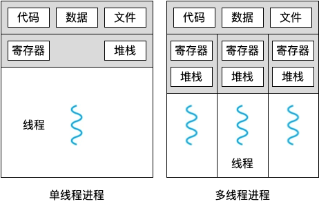
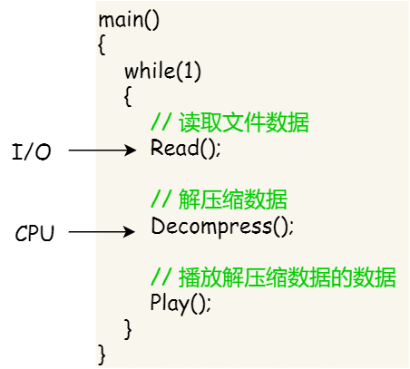
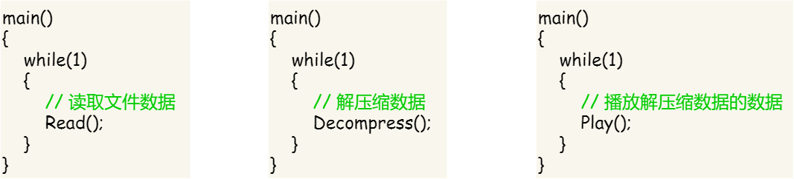
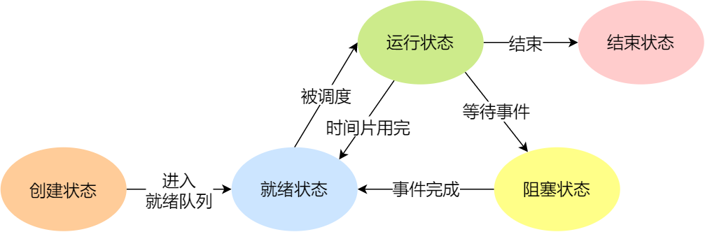
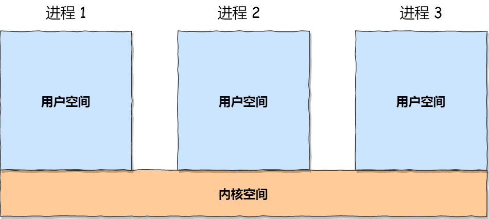
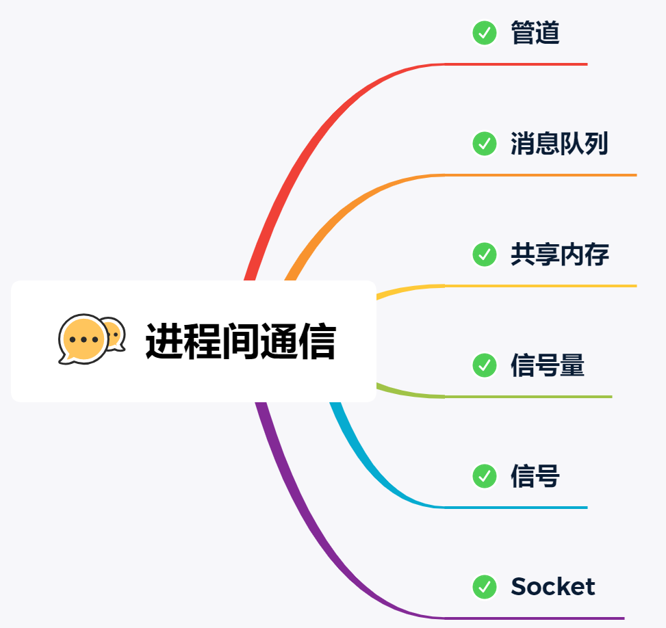
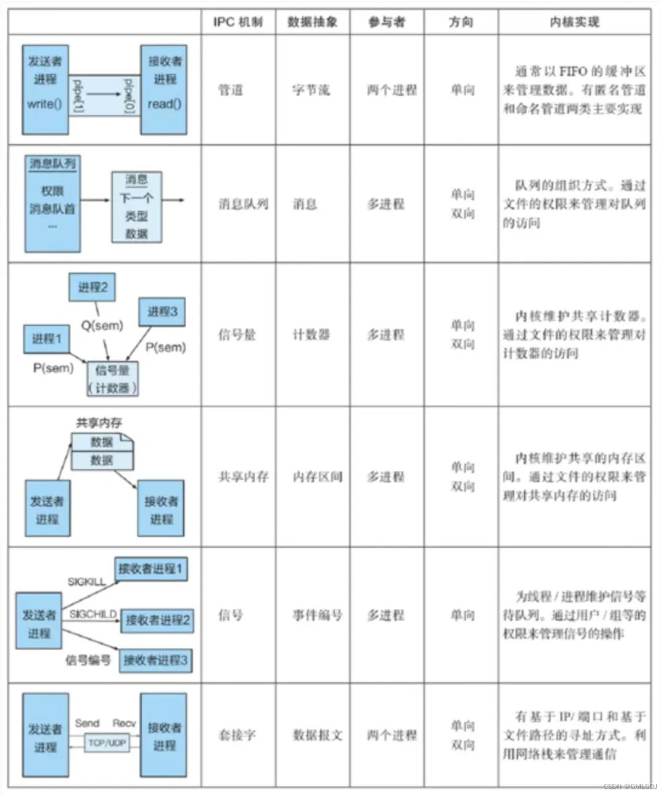
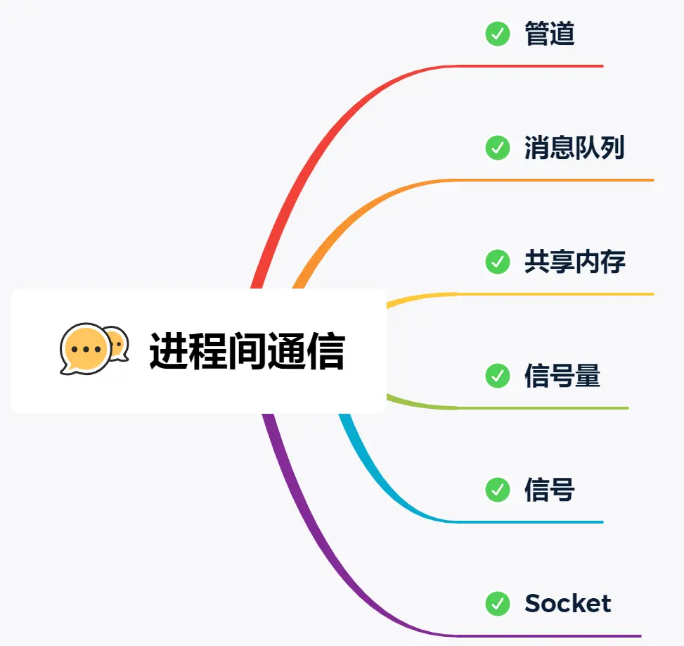
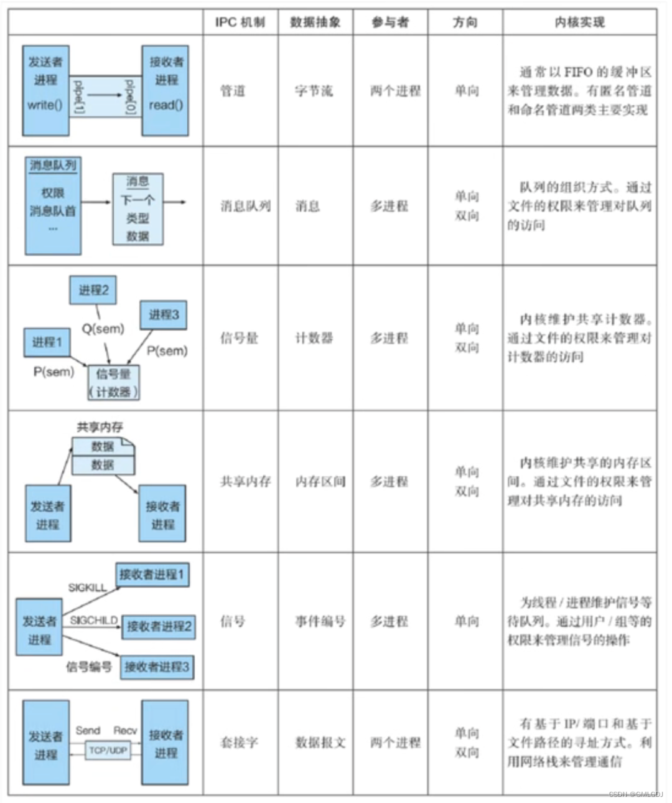

多进程和多线程的区别？
资源分配方面的区别：
- 多进程：每个进程都有独立的地址空间，这意味着它们在内存中有自己独立的区域来存储代码、数据和堆栈等。例如，一个进程的全局变量在另一个进程中是不可见的，进程之间的数据交换相对复杂，需要通过进程间通信（IPC）机制，如管道、消息队列、共享内存等来实现。
- 多线程：线程共享进程的地址空间，因此线程之间共享全局变量和堆内存等资源。这使得线程之间的数据共享相对简单，比如在一个多线程的服务器程序中，多个线程可以直接访问和修改共享的数据结构，如连接队列等。线程的创建和销毁相对进程来说开销较小，因为它们共享了进程的大部分资源，不需要重新分配像进程那样完整的资源集合。不过，由于线程共享资源，可能会导致资源竞争问题，需要通过同步机制（如互斥锁、信号量等）来解决。
调度和执行方面的区别：
- 多进程：进程间的切换开销相对较大，因为涉及到整个地址空间的切换、保存和恢复进程的上下文（包括寄存器的值、程序计数器等）。例如，从一个运行的文本编辑器进程切换到浏览器进程时，需要保存文本编辑器进程的完整状态，然后加载浏览器进程的状态。。
- 多线程：线程之间的切换相对进程来说开销较小，因为它们共享地址空间，只需要切换线程的私有数据（如栈指针、程序计数器等）和保存恢复一些寄存器的值。
稳定性和可靠性方面：
- 多进程：一个进程的崩溃（例如出现段错误等）通常不会影响其他进程的正常运行，因为每个进程都有独立的地址空间和资源。这使得系统的稳定性相对较高，例如，在一个服务器系统中，即使一个服务进程（如邮件服务进程）崩溃，其他服务进程（如 Web 服务进程）仍然可以继续工作。
- 多线程：由于线程共享进程的资源，一个线程出现问题（如访问非法地址、死锁等）可能会导致整个进程崩溃。例如，在一个多线程的数据库服务器程序中，如果一个线程因为错误的内存访问而崩溃，可能会导致整个服务器进程退出，影响系统的可靠性。
什么情况下使用多进程更好？
- 安全性和稳定性：当程序的不同部分对稳定性和安全性要求很高，并且彼此之间的错误可能会相互影响时，多进程是很好的选择。例如，在一个服务器系统中，有 Web 服务进程和数据库服务进程。如果 Web 服务进程因为遭受恶意攻击或者出现代码错误而崩溃，由于数据库服务进程是独立的，其数据和运行不会受到直接影响，从而保证了数据的安全性和系统的部分功能依然可用。
- 不同语言的兼容性：如果需要在一个应用程序中集成多种编程语言编写的模块，多进程可以提供简单的解决方案。例如，有一个系统，一部分是用 Python 编写的数据分析模块，另一部分是用 C++ 编写的高性能计算模块。由于不同语言的运行时环境、内存管理等可能存在差异，使用多进程可以让每个模块在自己独立的进程中运行，避免语言之间的相互干扰。
进程跟线程的区别？

- 本质区别：进程是操作系统资源分配的基本单位，而线程是任务调度和执行的基本单位
- 在开销方面：每个进程都有独立的代码和数据空间（程序上下文），程序之间的切换会有较大的开销；线程可以看做轻量级的进程，同一类线程共享代码和数据空间，每个线程都有自己独立的运行栈和程序计数器（PC），线程之间切换的开销小
- 稳定性方面：进程中某个线程如果崩溃了，可能会导致整个进程都崩溃。而进程中的子进程崩溃，并不会影响其他进程。
- 所处环境：在操作系统中能同时运行多个进程（程序）；而在同一个进程（程序）中有多个线程同时执行（通过CPU调度，在每个时间片中只有一个线程执行）
- 内存分配方面：系统在运行的时候会为每个进程分配不同的内存空间；而对线程而言，除了CPU外，系统不会为线程分配内存（线程所使用的资源来自其所属进程的资源），线程组之间只能共享资源
- 包含关系：没有线程的进程可以看做是单线程的，如果一个进程内有多个线程，则执行过程不是一条线的，而是多条线（线程）共同完成的；线程是进程的一部分，所以线程也被称为轻权进程或者轻量级进程
举个例子：进程=火车，线程=车厢
- 线程在进程下行进（单纯的车厢无法运行）
- 一个进程可以包含多个线程（一辆火车可以有多个车厢）
- 不同进程间数据很难共享（一辆火车上的乘客很难换到另外一辆火车，比如站点换乘）
- 同一进程下不同线程间数据很易共享（A车厢换到B车厢很容易）
- 进程要比线程消耗更多的计算机资源（采用多列火车相比多个车厢更耗资源）
- 进程间不会相互影响，一个线程挂掉将导致整个进程挂掉（一列火车不会影响到另外一列火车，但是如果一列火车上中间的一节车厢着火了，将影响到所有车厢）
进程和线程的区别？
-
资源分配：进程是操作系统中的一个执行实体，拥有独立的地址空间、文件描述符、打开的文件等资源。每个进程都被分配了独立的系统资源。而线程是进程中的一个执行单元，多个线程共享同一个进程的地址空间和其他资源，包括文件描述符、打开的文件等。
-
调度和切换：进程的调度是由操作系统内核进行的，切换进程需要进行上下文切换，涉及用户态和内核态之间的切换，开销相对较大。而线程的调度是在用户程序中完成，切换线程可以在用户态下快速切换，减少了系统调用的开销。
-
并发性：进程是独立的执行实体，不同进程之间通过进程间通信（IPC）来进行数据交换和共享。进程间通信的方式包括管道、信号量、共享内存等。而线程是在同一个进程中执行的，多个线程之间共享同一进程的资源，可以通过共享内存的方式进行数据交换和共享。
进程和线程的区别
-
独立性：进程是系统资源分配的最小单位，线程是处理器调度的最小单位。每个进程有自己独立的地址空间和系统资源，而线程则共享所属进程的资源。
-
开销：由于进程有自己独立的地址空间，所以进程间的切换需要更大的开销。线程间切换只需要保存和设置少量寄存器内容，开销小。
-
数据共享：同一进程内的线程共享进程的资源，如内存、文件描述符等，所以线程间的数据共享和通信更容易。进程间需要通过进程间通信机制来实现数据共享或通信。
11. 进程和线程的区别？
回答：
- cpu调度，内存调度
- 进程独立，线程基于进程
- 切换损耗
协程与我们普通的线程有什么区别？
读者答：协程可以理解为用户级别的线程，所以说在大小方面和调度方面都是比进程要更加的方便和简便的。
小林补充：
-
调度方式不同：线程是由操作系统调度的，而协程则是由程序员控制的。当一个线程被调度时，它会被操作系统挂起，等待下一次调度。而协程则是由程序员在代码中主动调用的，可以在不同的任务之间切换，而不需要等待操作系统的调度。
-
系统资源占用不同：线程是操作系统管理的实体，它占用系统资源比较大，包括内存、线程栈、CPU 时间片等。而协程则是在用户空间中实现的，不需要操作系统的支持，因此占用的资源比较少。
-
切换成本不同：线程的切换需要保存和恢复线程上下文，需要耗费一定的时间和资源。而协程的切换只需要保存和恢复栈帧等少量数据，因此切换成本比线程低。
-
编程模型不同：线程是面向操作系统的，而协程是面向任务的。线程需要使用操作系统提供的 API 进行线程间通信和同步，而协程则可以使用语言级别的协程库实现协作式多任务。
线程和协程有什么区别？
- 调度方式：线程的调度由操作系统内核负责，采用的是抢占式调度，即操作系统可以主动剥夺线程的执行权。而协程的调度由用户程序控制，采用的是协作式调度，即协程主动让出执行权。
- 切换开销：线程切换需要从用户态切换到内核态，涉及CPU寄存器的保存和恢复等操作，开销较大。而协程切换是在用户态进行的，开销较小。
- 内存开销：线程的创建和销毁涉及操作系统的调用和资源分配，开销较大。而协程的创建和销毁由用户程序控制，开销较小。
协程和线程什么区别？
-
调度方式：线程的调度是由操作系统内核进行的，而协程的调度是由程序员或者特定的协程调度器进行的。线程的调度是由操作系统内核控制，切换线程需要进行系统调用，涉及用户态和内核态之间的切换，相对较为耗时。而协程的调度是在用户程序中完成，切换协程可以在用户态下快速切换，减少了系统调用的开销。
-
并发性：线程是操作系统提供的轻量级进程，多个线程之间可以并发执行，但在多核处理器上，线程的并发性是通过操作系统的线程调度实现的。而协程是在单个线程中执行的，多个协程之间通过协程调度器进行切换，实现了更细粒度的并发性。
-
内存消耗：线程的创建和销毁需要操作系统进行一系列的资源分配和回收，包括线程的栈空间和线程控制块等。而协程在单个线程中执行，不需要额外的系统资源分配，只需要协程调度器保存和恢复协程的上下文。
-
同步方式：线程之间的通信和同步需要使用锁、条件变量等机制来进行，这些机制需要进行加锁和解锁的操作，容易引发死锁和竞态条件等问题。而协程可以使用更轻量级的方式进行通信和同步，如使用通道（Channel）来实现协程之间的消息传递。
协程为什么比线程快？
协程比线程快的主要原因有以下几点：
-
用户态切换：协程是在用户态下进行切换，不涉及内核态的上下文切换和系统调用，切换成本低，执行效率高。
-
轻量级：协程是由用户自己管理的，不需要操作系统进行调度和管理，占用的资源较少，创建和销毁的开销小。
-
高并发：协程可以在同一个线程内并发执行，避免了线程切换和同步的开销，提高了并发处理能力。
三、线程和进程的区别？使用线程的心得？
-
进程是资源（包括内存、打开的文件等）分配的单位，线程是 CPU 调度的单位；
-
（关键词：进程独立空间、线程之前共享空间资源）进程拥有一个独立完整的资源平台，不和其他进程共享；而线程只独享必不可少的资源，如寄存器和栈，而一个进程里可以有多个线程，彼此共享同一个地址空间。
-
线程同样具有就绪、阻塞、执行三种基本状态，同样具有状态之间的转换关系；
-
线程能减少并发执行的时间和空间开销
对于，线程相比进程能减少开销，体现在：
- （1. 创建时间少）线程的创建时间比进程快，因为进程在创建的过程中，还需要资源管理信息，比如内存、文件管理信息切换虚拟地址空间，切换内核栈和硬件上下文，页表切换开销很大，而线程在创建的过程中，不会涉及这些信息，而是共享它们，只需保存和设置少量寄存器内容，因此开销很小；
- （2. 终止时间少）线程的终止时间比进程快，因为线程释放的资源相比进程少很多；
- （3. 不需要切换页表，切换时间块）同一个进程内的线程切换比进程切换快，因为线程具有相同的地址空间（虚拟内存共享），这意味着同一个进程的线程都具有同一个页表，那么在切换的时候不需要切换页表。而对于进程之间的切换，切换的时候要把页表给切换掉，而页表的切换过程开销是比较大的；
- （4. 共享、线程之间数据传递效率高）由于同一进程的各线程间共享内存和文件资源，那么在线程之间数据传递的时候，就不需要经过内核了，这就使得线程之间的数据交互效率更高了；
所以，不管是时间效率，还是空间效率线程比进程都要高
心得：线程使用有一定难度，需要处理数据一致性问题，比如要使用互斥锁和条件变量等同步机制保证线程安全（原子性操作）
3. 进程，线程，协程是什么？
- 首先，我们来谈谈进程。进程是操作系统中进行资源分配和调度的基本单位，它拥有自己的独立内存空间和系统资源。每个进程都有独立的堆和栈，不与其他进程共享。进程间通信需要通过特定的机制，如管道、消息队列、信号量等。由于进程拥有独立的内存空间，因此其稳定性和安全性相对较高，但同时上下文切换的开销也较大，因为需要保存和恢复整个进程的状态。
- 接下来是线程。线程是进程内的一个执行单元，也是CPU调度和分派的基本单位。与进程不同，线程共享进程的内存空间，包括堆和全局变量。线程之间通信更加高效，因为它们可以直接读写共享内存。线程的上下文切换开销较小，因为只需要保存和恢复线程的上下文，而不是整个进程的状态。然而，由于多个线程共享内存空间，因此存在数据竞争和线程安全的问题，需要通过同步和互斥机制来解决。
- 最后是协程。协程是一种用户态的轻量级线程，其调度完全由用户程序控制，而不需要内核的参与。协程拥有自己的寄存器上下文和栈，但与其他协程共享堆内存。协程的切换开销非常小，因为只需要保存和恢复协程的上下文，而无需进行内核级的上下文切换。这使得协程在处理大量并发任务时具有非常高的效率。然而，协程需要程序员显式地进行调度和管理，相对于线程和进程来说，其编程模型更为复杂。
那你觉得同步技术有哪些技术？
答：
- 首先是匿名管道，但是有个缺点，所有文件都共享，并且取/写只能一个操作；
- 紧接着是命名管道，可以用于两个指定文件间进行同步；
- 然后是信号量，我认为信号量和锁类似，通过信号量，进程之间进行间接通信；信号和信号量相类似。
- 还有互斥锁、读写锁、自选锁
线程共享的有什么？
同一进程中的所有线程共享进程的核心资源，主要包括：
- 代码段：进程的可执行代码，所有线程共享同一份程序指令。
- 数据段：全局变量、静态变量等，线程对这些变量的修改会被其他线程看到。
-
堆内存：动态分配的内存（如 Java 中的
new、C 中的malloc），属于进程共享区域。 - 文件描述符：打开的文件、网络连接等 IO 资源，线程可共享读写。
- 信号处理方式：进程注册的信号处理函数对所有线程生效。
线程也有少量私有资源，不与其他线程共享：
- 程序计数器（PC）：记录当前线程执行的指令位置。
- 栈内存（Stack）：存储局部变量、函数调用栈等，线程私有以避免冲突。
- 寄存器：CPU 中的寄存器状态，线程切换时需保存和恢复。
- 线程 ID：标识不同线程的唯一 ID。
线程切换要保存哪些上下文？
-
寄存器上下文：线程切换时需要保存和恢复线程所使用的寄存器的值，以便切换后能够继续执行。常见的寄存器包括通用寄存器（如EAX、EBX、ECX等）、指令指针寄存器（如EIP）、堆栈指针寄存器（如ESP）等。
-
栈：线程的栈用于保存局部变量、函数调用信息等。在线程切换时，需要保存和恢复当前线程的栈指针，以及相应的栈帧信息。
-
线程上下文信息：线程切换时，需要保存和恢复与线程相关的其他上下文信息，如线程状态、调度优先级等。
进程之间的地址空间是否可以共享？
进程之间的地址空间通常是不共享的。这是因为每个进程都有自己的虚拟地址空间，操作系统为每个进程分配独立的内存区域，以保护进程之间的内存不受干扰。这样设计可以有效地提高系统的安全性和稳定性，防止一个进程意外或恶意地影响其他进程的运行。
尽管进程之间的地址空间通常不共享，但有多种机制可以让它们进行通信：
- 共享内存：操作系统提供共享内存机制，允许多个进程访问同一块物理内存区域。这样，进程可以像使用常规内存一样访问共享内存。这种方法非常高效，因为它避免了数据的复制。然而，使用共享内存时，进程之间还是需要一些同步机制（如信号量、互斥锁）来避免数据竞争问题。
- 管道与消息队列：进程可以通过管道（管道是单向的）和消息队列等机制进行数据交换。这些机制提供了一种可靠的方式来传递信息，而不需要直接共享内存。
- 套接字：套接字允许不同主机上的进程进行通信，也可以在同一台机器上的不同进程之间进行 IPC。
- 文件：进程还可以通过读写文件的方式交换数据。虽然这种方法速度较慢，但在一定情况下可以保证数据的持久性。
线程和协程区别？
- 首先，我们来谈谈进程。进程是操作系统中进行资源分配和调度的基本单位，它拥有自己的独立内存空间和系统资源。每个进程都有独立的堆和栈，不与其他进程共享。进程间通信需要通过特定的机制，如管道、消息队列、信号量等。由于进程拥有独立的内存空间，因此其稳定性和安全性相对较高，但同时上下文切换的开销也较大，因为需要保存和恢复整个进程的状态。
- 接下来是线程。线程是进程内的一个执行单元，也是CPU调度和分派的基本单位。与进程不同，线程共享进程的内存空间，包括堆和全局变量。线程之间通信更加高效，因为它们可以直接读写共享内存。线程的上下文切换开销较小，因为只需要保存和恢复线程的上下文，而不是整个进程的状态。然而，由于多个线程共享内存空间，因此存在数据竞争和线程安全的问题，需要通过同步和互斥机制来解决。
- 最后是协程。协程是一种用户态的轻量级线程，其调度完全由用户程序控制，而不需要内核的参与。协程拥有自己的寄存器上下文和栈，但与其他协程共享堆内存。协程的切换开销非常小，因为只需要保存和恢复协程的上下文，而无需进行内核级的上下文切换。这使得协程在处理大量并发任务时具有非常高的效率。然而，协程需要程序员显式地进行调度和管理，相对于线程和进程来说，其编程模型更为复杂。
进程，线程，协程的区别是什么？
- 首先，我们来谈谈进程。进程是操作系统中进行资源分配和调度的基本单位，它拥有自己的独立内存空间和系统资源。每个进程都有独立的堆和栈，不与其他进程共享。进程间通信需要通过特定的机制，如管道、消息队列、信号量等。由于进程拥有独立的内存空间，因此其稳定性和安全性相对较高，但同时上下文切换的开销也较大，因为需要保存和恢复整个进程的状态。
- 接下来是线程。线程是进程内的一个执行单元，也是CPU调度和分派的基本单位。与进程不同，线程共享进程的内存空间，包括堆和全局变量。线程之间通信更加高效，因为它们可以直接读写共享内存。线程的上下文切换开销较小，因为只需要保存和恢复线程的上下文，而不是整个进程的状态。然而，由于多个线程共享内存空间，因此存在数据竞争和线程安全的问题，需要通过同步和互斥机制来解决。
- 最后是协程。协程是一种用户态的轻量级线程，其调度完全由用户程序控制，而不需要内核的参与。协程拥有自己的寄存器上下文和栈，但与其他协程共享堆内存。协程的切换开销非常小，因为只需要保存和恢复协程的上下文，而无需进行内核级的上下文切换。这使得协程在处理大量并发任务时具有非常高的效率。然而，协程需要程序员显式地进行调度和管理，相对于线程和进程来说，其编程模型更为复杂。
进程、线程、协程的概念
-
进程（Process）：进程是操作系统中的一个执行实例，它拥有独立的内存空间和资源。每个进程都是独立运行的，拥有自己的地址空间、文件句柄、环境变量等。进程间通信需要通过特定的机制，如管道、消息队列、共享内存等。
-
线程（Thread）：线程是进程的一部分，是在同一进程内并发执行的执行单元。不同线程共享同一进程的内存空间和资源，包括全局变量、堆、文件描述符等。线程可以更轻量级地创建、切换和销毁，相对于进程而言，线程间的切换开销较小。线程之间可以通过共享内存等机制进行通信。
-
协程（Coroutine）：协程是一种用户级的轻量级线程。协程由用户控制，而不是由操作系统内核控制。在协程中，执行流可以在不同协程之间进行切换，切换由程序员手动控制，而不需要内核介入。协程可以在一个线程内实现并发，但无法利用多核心处理器。协程通常用于实现高效的异步编程和协作任务。
线程、进程、协程区别是什么？
- 首先，我们来谈谈进程。进程是操作系统中进行资源分配和调度的基本单位，它拥有自己的独立内存空间和系统资源。每个进程都有独立的堆和栈，不与其他进程共享。进程间通信需要通过特定的机制，如管道、消息队列、信号量等。由于进程拥有独立的内存空间，因此其稳定性和安全性相对较高，但同时上下文切换的开销也较大，因为需要保存和恢复整个进程的状态。
- 接下来是线程。线程是进程内的一个执行单元，也是CPU调度和分派的基本单位。与进程不同，线程共享进程的内存空间，包括堆和全局变量。线程之间通信更加高效，因为它们可以直接读写共享内存。线程的上下文切换开销较小，因为只需要保存和恢复线程的上下文，而不是整个进程的状态。然而，由于多个线程共享内存空间，因此存在数据竞争和线程安全的问题，需要通过同步和互斥机制来解决。
- 最后是协程。协程是一种用户态的轻量级线程，其调度完全由用户程序控制，而不需要内核的参与。协程拥有自己的寄存器上下文和栈，但与其他协程共享堆内存。协程的切换开销非常小，因为只需要保存和恢复协程的上下文，而无需进行内核级的上下文切换。这使得协程在处理大量并发任务时具有非常高的效率。然而，协程需要程序员显式地进行调度和管理，相对于线程和进程来说，其编程模型更为复杂。
线程和进程的区别？
老八股文，这个都不会，说不过去了。从定义、地址空间、通信、安全性这几个方面对比回答。
- 调度和资源：进程是操作系统进行资源分配和调度的基本单位，而线程是进程的执行单元，共享进程的资源。
- 地址空间：每个进程都有独立的地址空间，而线程共享所属进程的地址空间，包括代码段、数据段、堆。
- 通信：进程间通信需要额外的机制，如管道、消息队列、共享内存等，而线程间通信可以直接共享全局变量等数据结构来实现。
- 安全性：多线程编程需要更小心地处理共享资源，避免出现竞态条件和死锁等问题，而多进程编程由于各进程有独立的地址空间，相对更容易实现并发安全性，一个进程崩溃不会影响其他进程而一个线程崩溃可能影响整个进程。
分配给进程的资源有哪些？
虚拟内存、文件描述符、信号等等
进程切换和线程切换的区别？
-
进程切换：进程切换涉及到更多的内容，包括整个进程的地址空间、全局变量、文件描述符等。因此，进程切换的开销通常比线程切换大。
-
线程切换：线程切换只涉及到线程的堆栈、寄存器和程序计数器等，不涉及进程级别的资源，因此线程切换的开销较小。
1. 进程、线程、协程三者的区别是什么？
- 首先，我们来谈谈进程。进程是操作系统中进行资源分配和调度的基本单位，它拥有自己的独立内存空间和系统资源。每个进程都有独立的堆和栈，不与其他进程共享。进程间通信需要通过特定的机制，如管道、消息队列、信号量等。由于进程拥有独立的内存空间，因此其稳定性和安全性相对较高，但同时上下文切换的开销也较大，因为需要保存和恢复整个进程的状态。
- 接下来是线程。线程是进程内的一个执行单元，也是CPU调度和分派的基本单位。与进程不同，线程共享进程的内存空间，包括堆和全局变量。线程之间通信更加高效，因为它们可以直接读写共享内存。线程的上下文切换开销较小，因为只需要保存和恢复线程的上下文，而不是整个进程的状态。然而，由于多个线程共享内存空间，因此存在数据竞争和线程安全的问题，需要通过同步和互斥机制来解决。
- 最后是协程。协程是一种用户态的轻量级线程，其调度完全由用户程序控制，而不需要内核的参与。协程拥有自己的寄存器上下文和栈，但与其他协程共享堆内存。协程的切换开销非常小，因为只需要保存和恢复协程的上下文，而无需进行内核级的上下文切换。这使得协程在处理大量并发任务时具有非常高的效率。然而，协程需要程序员显式地进行调度和管理，相对于线程和进程来说，其编程模型更为复杂。
2. 为什么需要协程？
需要协程的三个原因如下：
- 在处理大量并发任务时，使用线程会因为线程创建和上下文切换的开销而导致性能下降。而协程可以在单线程中实现高效的并发处理，避免了线程切换的开销，从而提高了系统的并发性能。
- 在传统的异步编程中，通常需要使用回调函数 等方式来处理异步操作，这会导致代码的可读性和可维护性变差。而协程可以使用同步的方式编写异步代码，使得代码更加简洁易懂。
- 由于协程的轻量级特性，它可以在有限的系统资源下创建大量的协程，从而实现高效的并发处理。这对于资源受限的系统尤为重要。
讲下为什么进程之下还要设计线程，线程之间怎么通信的
为什么要设计线程
我们举个例子，假设你要编写一个视频播放器软件，那么该软件功能的核心模块有三个：
- 从视频文件当中读取数据；
- 对读取的数据进行解压缩；
- 把解压缩后的视频数据播放出来；
对于单进程的实现方式，我想大家都会是以下这个方式：

对于单进程的这种方式，存在以下问题：- 播放出来的画面和声音会不连贯，因为当 CPU 能力不够强的时候，Read 的时候可能进程就等在这了，这样就会导致等半天才进行数据解压和播放；
- 各个函数之间不是并发执行，影响资源的使用效率；
那改进成多进程的方式：

对于多进程的这种方式，依然会存在问题：- 进程之间如何通信，共享数据？
- 维护进程的系统开销较大，如创建进程时，分配资源、建立 PCB；终止进程时，回收资源、撤销 PCB；进程切换时，保存当前进程的状态信息；
那到底如何解决呢？需要有一种新的实体，满足以下特性：
- 实体之间可以并发运行；
- 实体之间共享相同的地址空间；
这个新的实体，就是**线程( Thread )**，线程之间可以并发运行且共享相同的地址空间。
线程间的通信方式
Linux系统提供了五种用于线程通信的方式：互斥锁、读写锁、条件变量、自旋锁和信号量。
- 互斥锁（Mutex）：互斥量(mutex)从本质上说是一把锁，在访问共享资源前对互斥量进行加锁，在访问完成后释放互斥量上的锁。对互斥量进行加锁以后，任何其他试图再次对互斥锁加锁的线程将会阻塞直到当前线程释放该互斥锁。如果释放互斥锁时有多个线程阻塞，所有在该互斥锁上的阻塞线程都会变成可运行状态，第一个变为运行状态的线程可以对互斥锁加锁，其他线程将会看到互斥锁依然被锁住，只能回去再次等待它重新变为可用。
- 条件变量（Condition Variables）：条件变量(cond)是在多线程程序中用来实现"等待--》唤醒"逻辑常用的方法。条件变量利用线程间共享的全局变量进行同步的一种机制，主要包括两个动作：一个线程等待"条件变量的条件成立"而挂起；另一个线程使“条件成立”。为了防止竞争，条件变量的使用总是和一个互斥锁结合在一起。线程在改变条件状态前必须首先锁住互斥量，函数pthread_cond_wait把自己放到等待条件的线程列表上，然后对互斥锁解锁(这两个操作是原子操作)。在函数返回时，互斥量再次被锁住。
- 自旋锁（Spinlock）：自旋锁通过 CPU 提供的 CAS 函数（_Compare And Swap_），在「用户态」完成加锁和解锁操作，不会主动产生线程上下文切换，所以相比互斥锁来说，会快一些，开销也小一些。一般加锁的过程，包含两个步骤：第一步，查看锁的状态，如果锁是空闲的，则执行第二步；第二步，将锁设置为当前线程持有；使用自旋锁的时候，当发生多线程竞争锁的情况，加锁失败的线程会「忙等待」，直到它拿到锁。CAS 函数就把这两个步骤合并成一条硬件级指令，形成原子指令，这样就保证了这两个步骤是不可分割的，要么一次性执行完两个步骤，要么两个步骤都不执行。这里的「忙等待」可以用 while 循环等待实现，不过最好是使用 CPU 提供的 PAUSE 指令来实现「忙等待」，因为可以减少循环等待时的耗电量。
- 信号量（Semaphores）：信号量可以是命名的（有名信号量）或无名的（仅限于当前进程内的线程），用于控制对资源的访问次数。通常信号量表示资源的数量，对应的变量是一个整型（sem）变量。另外，还有两个原子操作的系统调用函数来控制信号量的，分别是：_P 操作_：将 sem 减 1，相减后，如果 sem < 0，则进程/线程进入阻塞等待，否则继续，表明 P 操作可能会阻塞；_V 操作_：将 sem 加 1，相加后，如果 sem <= 0，唤醒一个等待中的进程/线程，表明 V 操作不会阻塞；
- 读写锁（Read-Write Locks）：读写锁从字面意思我们也可以知道，它由「读锁」和「写锁」两部分构成，如果只读取共享资源用「读锁」加锁，如果要修改共享资源则用「写锁」加锁。所以，读写锁适用于能明确区分读操作和写操作的场景。读写锁的工作原理是：当「写锁」没有被线程持有时，多个线程能够并发地持有读锁，这大大提高了共享资源的访问效率，因为「读锁」是用于读取共享资源的场景，所以多个线程同时持有读锁也不会破坏共享资源的数据。但是，一旦「写锁」被线程持有后，读线程的获取读锁的操作会被阻塞，而且其他写线程的获取写锁的操作也会被阻塞。所以说，写锁是独占锁，因为任何时刻只能有一个线程持有写锁，类似互斥锁和自旋锁，而读锁是共享锁，因为读锁可以被多个线程同时持有。知道了读写锁的工作原理后，我们可以发现，读写锁在读多写少的场景，能发挥出优势。
1. 协程是什么？有什么好处？
协程是一种用户态的轻量级线程，其调度完全由用户程序控制，而不需要内核的参与。协程拥有自己的寄存器上下文和栈，但与其他协程共享堆内存。
协程的优势：
- 极高的性能：协程的切换开销非常小，因为只需要保存和恢复协程的上下文，而无需进行内核级的上下文切换，能够轻松创建数十万个协程，极大地提升了并发处理能力。
- 避免线程开销：无需进行线程创建、销毁和上下文切换，降低了系统资源的消耗，单个线程可运行多个协程，特别适合 I/O 密集型任务。
- 简化异步编程：协程使用同步的编码方式来实现异步操作，使代码更易于理解和维护，以顺序的方式编写异步代码，避免了回调地狱的问题。
| 对比项 | 协程 | 线程 |
|---|---|---|
| 调度方式 | 协作式（由程序自身控制） | 抢占式（由操作系统控制） |
| 上下文切换开销 | 极低（用户空间） | 较高（内核空间） |
| 内存占用 | 很小（通常为 KB 级别） | 较大（通常为 MB 级别） |
| 并发数量 | 可达到数万至数百万 | 通常为数百至数千 |
| 数据共享 | 共享同一线程内的变量 | 需要通过同步机制共享 |
进程状态之间的相互转化？
一个完整的进程状态的变迁如下图：

再来详细说明一下进程的状态变迁：
- NULL -> 创建状态：一个新进程被创建时的第一个状态；
- 创建状态 -> 就绪状态：当进程被创建完成并初始化后，一切就绪准备运行时，变为就绪状态，这个过程是很快的；
- 就绪态 -> 运行状态：处于就绪状态的进程被操作系统的进程调度器选中后，就分配给 CPU 正式运行该进程；
- 运行状态 -> 结束状态：当进程已经运行完成或出错时，会被操作系统作结束状态处理；
- 运行状态 -> 就绪状态：处于运行状态的进程在运行过程中，由于分配给它的运行时间片用完，操作系统会把该进程变为就绪态，接着从就绪态选中另外一个进程运行；
- 运行状态 -> 阻塞状态：当进程请求某个事件且必须等待时，例如请求 I/O 事件；
- 阻塞状态 -> 就绪状态：当进程要等待的事件完成时，它从阻塞状态变到就绪状态；
8. 进程通信方式你知道哪些？
Linux 内核提供了不少进程间通信的方式：
- 管道
- 消息队列
- 共享内存
- 信号
- 信号量
- socket

Linux 内核提供了不少进程间通信的方式，其中最简单的方式就是管道，管道分为「匿名管道」和「命名管道」。
匿名管道顾名思义，它没有名字标识，匿名管道是特殊文件只存在于内存，没有存在于文件系统中，shell 命令中的「|」竖线就是匿名管道，通信的数据是无格式的流并且大小受限，通信的方式是单向的，数据只能在一个方向上流动，如果要双向通信，需要创建两个管道，再来匿名管道是只能用于存在父子关系的进程间通信，匿名管道的生命周期随着进程创建而建立，随着进程终止而消失。
命名管道突破了匿名管道只能在亲缘关系进程间的通信限制，因为使用命名管道的前提，需要在文件系统创建一个类型为 p 的设备文件，那么毫无关系的进程就可以通过这个设备文件进行通信。另外，不管是匿名管道还是命名管道，进程写入的数据都是缓存在内核中，另一个进程读取数据时候自然也是从内核中获取，同时通信数据都遵循先进先出原则，不支持 lseek 之类的文件定位操作。
消息队列克服了管道通信的数据是无格式的字节流的问题，消息队列实际上是保存在内核的「消息链表」，消息队列的消息体是可以用户自定义的数据类型，发送数据时，会被分成一个一个独立的消息体，当然接收数据时，也要与发送方发送的消息体的数据类型保持一致，这样才能保证读取的数据是正确的。消息队列通信的速度不是最及时的，毕竟每次数据的写入和读取都需要经过用户态与内核态之间的拷贝过程。
共享内存可以解决消息队列通信中用户态与内核态之间数据拷贝过程带来的开销，它直接分配一个共享空间，每个进程都可以直接访问，就像访问进程自己的空间一样快捷方便，不需要陷入内核态或者系统调用，大大提高了通信的速度，享有最快的进程间通信方式之名。但是便捷高效的共享内存通信，带来新的问题，多进程竞争同个共享资源会造成数据的错乱。
那么，就需要信号量来保护共享资源，以确保任何时刻只能有一个进程访问共享资源，这种方式就是互斥访问。信号量不仅可以实现访问的互斥性，还可以实现进程间的同步，信号量其实是一个计数器，表示的是资源个数，其值可以通过两个原子操作来控制，分别是 P 操作和 V 操作。
与信号量名字很相似的叫信号，它俩名字虽然相似，但功能一点儿都不一样。信号是异步通信机制，信号可以在应用进程和内核之间直接交互，内核也可以利用信号来通知用户空间的进程发生了哪些系统事件，信号事件的来源主要有硬件来源（如键盘 Cltr+C ）和软件来源（如 kill 命令），一旦有信号发生，进程有三种方式响应信号 1. 执行默认操作、2. 捕捉信号、3. 忽略信号。有两个信号是应用进程无法捕捉和忽略的，即 SIGKILL 和 SIGSTOP，这是为了方便我们能在任何时候结束或停止某个进程。
前面说到的通信机制，都是工作于同一台主机，如果要与不同主机的进程间通信，那么就需要 Socket 通信了。Socket 实际上不仅用于不同的主机进程间通信，还可以用于本地主机进程间通信，可根据创建 Socket 的类型不同，分为三种常见的通信方式，一个是基于 TCP 协议的通信方式，一个是基于 UDP 协议的通信方式，一个是本地进程间通信方式。
进程间通信方式？
由于每个进程的用户空间都是独立的，不能相互访问，这时就需要借助内核空间来实现进程间通信，原因很简单，每个进程都是共享一个内核空间。Linux 内核提供了不少进程间通信的方式，其中最简单的方式就是管道，管道分为「匿名管道」和「命名管道」。
匿名管道顾名思义，它没有名字标识，匿名管道是特殊文件只存在于内存，没有存在于文件系统中，shell 命令中的「|」竖线就是匿名管道，通信的数据是无格式的流并且大小受限，通信的方式是单向的，数据只能在一个方向上流动，如果要双向通信，需要创建两个管道，再来匿名管道是只能用于存在父子关系的进程间通信，匿名管道的生命周期随着进程创建而建立，随着进程终止而消失。
命名管道突破了匿名管道只能在亲缘关系进程间的通信限制，因为使用命名管道的前提，需要在文件系统创建一个类型为 p 的设备文件，那么毫无关系的进程就可以通过这个设备文件进行通信。另外，不管是匿名管道还是命名管道，进程写入的数据都是缓存在内核中，另一个进程读取数据时候自然也是从内核中获取，同时通信数据都遵循先进先出原则，不支持 lseek 之类的文件定位操作。
消息队列克服了管道通信的数据是无格式的字节流的问题，消息队列实际上是保存在内核的「消息链表」，消息队列的消息体是可以用户自定义的数据类型，发送数据时，会被分成一个一个独立的消息体，当然接收数据时，也要与发送方发送的消息体的数据类型保持一致，这样才能保证读取的数据是正确的。消息队列通信的速度不是最及时的，毕竟每次数据的写入和读取都需要经过用户态与内核态之间的拷贝过程。
共享内存可以解决消息队列通信中用户态与内核态之间数据拷贝过程带来的开销，它直接分配一个共享空间，每个进程都可以直接访问，就像访问进程自己的空间一样快捷方便，不需要陷入内核态或者系统调用，大大提高了通信的速度，享有最快的进程间通信方式之名。但是便捷高效的共享内存通信，带来新的问题，多进程竞争同个共享资源会造成数据的错乱。
那么，就需要信号量来保护共享资源，以确保任何时刻只能有一个进程访问共享资源，这种方式就是互斥访问。信号量不仅可以实现访问的互斥性，还可以实现进程间的同步，信号量其实是一个计数器，表示的是资源个数，其值可以通过两个原子操作来控制，分别是 P 操作和 V 操作。
与信号量名字很相似的叫信号，它俩名字虽然相似，但功能一点儿都不一样。信号是异步通信机制，信号可以在应用进程和内核之间直接交互，内核也可以利用信号来通知用户空间的进程发生了哪些系统事件，信号事件的来源主要有硬件来源（如键盘 Cltr+C ）和软件来源（如 kill 命令），一旦有信号发生，进程有三种方式响应信号 1. 执行默认操作、2. 捕捉信号、3. 忽略信号。有两个信号是应用进程无法捕捉和忽略的，即 SIGKILL 和 SIGSTOP，这是为了方便我们能在任何时候结束或停止某个进程。
前面说到的通信机制，都是工作于同一台主机，如果要与不同主机的进程间通信，那么就需要 Socket 通信了。Socket 实际上不仅用于不同的主机进程间通信，还可以用于本地主机进程间通信，可根据创建 Socket 的类型不同，分为三种常见的通信方式，一个是基于 TCP 协议的通信方式，一个是基于 UDP 协议的通信方式，一个是本地进程间通信方式。
进程通信方式有哪些方式？
由于每个进程的用户空间都是独立的，不能相互访问，这时就需要借助内核空间来实现进程间通信，原因很简单，每个进程都是共享一个内核空间。
Linux 内核提供了不少进程间通信的方式，其中最简单的方式就是管道，管道分为「匿名管道」和「命名管道」。
匿名管道顾名思义，它没有名字标识，匿名管道是特殊文件只存在于内存，没有存在于文件系统中，shell 命令中的「|」竖线就是匿名管道，通信的数据是无格式的流并且大小受限，通信的方式是单向的，数据只能在一个方向上流动，如果要双向通信，需要创建两个管道，再来匿名管道是只能用于存在父子关系的进程间通信，匿名管道的生命周期随着进程创建而建立，随着进程终止而消失。
命名管道突破了匿名管道只能在亲缘关系进程间的通信限制，因为使用命名管道的前提，需要在文件系统创建一个类型为 p 的设备文件，那么毫无关系的进程就可以通过这个设备文件进行通信。另外，不管是匿名管道还是命名管道，进程写入的数据都是缓存在内核中，另一个进程读取数据时候自然也是从内核中获取，同时通信数据都遵循先进先出原则，不支持 lseek 之类的文件定位操作。
消息队列克服了管道通信的数据是无格式的字节流的问题，消息队列实际上是保存在内核的「消息链表」，消息队列的消息体是可以用户自定义的数据类型，发送数据时，会被分成一个一个独立的消息体，当然接收数据时，也要与发送方发送的消息体的数据类型保持一致，这样才能保证读取的数据是正确的。消息队列通信的速度不是最及时的，毕竟每次数据的写入和读取都需要经过用户态与内核态之间的拷贝过程。
共享内存可以解决消息队列通信中用户态与内核态之间数据拷贝过程带来的开销，它直接分配一个共享空间，每个进程都可以直接访问，就像访问进程自己的空间一样快捷方便，不需要陷入内核态或者系统调用，大大提高了通信的速度，享有最快的进程间通信方式之名。但是便捷高效的共享内存通信，带来新的问题，多进程竞争同个共享资源会造成数据的错乱。
那么，就需要信号量来保护共享资源，以确保任何时刻只能有一个进程访问共享资源，这种方式就是互斥访问。信号量不仅可以实现访问的互斥性，还可以实现进程间的同步，信号量其实是一个计数器，表示的是资源个数，其值可以通过两个原子操作来控制，分别是 P 操作和 V 操作。
与信号量名字很相似的叫信号，它俩名字虽然相似，但功能一点儿都不一样。信号是异步通信机制，信号可以在应用进程和内核之间直接交互，内核也可以利用信号来通知用户空间的进程发生了哪些系统事件，信号事件的来源主要有硬件来源（如键盘 Cltr+C ）和软件来源（如 kill 命令），一旦有信号发生，进程有三种方式响应信号 1. 执行默认操作、2. 捕捉信号、3. 忽略信号。有两个信号是应用进程无法捕捉和忽略的，即 SIGKILL 和 SIGSTOP，这是为了方便我们能在任何时候结束或停止某个进程。
前面说到的通信机制，都是工作于同一台主机，如果要与不同主机的进程间通信，那么就需要 Socket 通信了。Socket 实际上不仅用于不同的主机进程间通信，还可以用于本地主机进程间通信，可根据创建 Socket 的类型不同，分为三种常见的通信方式，一个是基于 TCP 协议的通信方式，一个是基于 UDP 协议的通信方式，一个是本地进程间通信方式。
以上，就是进程间通信的主要机制了。
信号和信号量有什么区别？
-
信号：一种处理异步事件的方式。信号是比较复杂的通信方式，用于通知接收进程有某种事件发生，除了用于进程外，还可以发送信号给进程本身。
-
信号量：进程间通信处理同步互斥的机制。是在多线程环境下使用的一种设施，它负责协调各个线程，以保证它们能够正确，合理的使用公共资源。
进程间通信有哪些？
进程间通信的方式有多种，包括：
- 管道（Pipe）：单向通信，适用于有亲缘关系的进程（父子进程）之间通信。
- 优点：简单易用，适用于单向通信。
- 缺点：只能在有亲缘关系的进程之间使用，且只能实现单向通信。
- 命名管道（Named Pipe）：允许无亲缘关系的进程间进行通信。
- 优点：允许无亲缘关系的进程进行通信。
- 缺点：只能实现单向通信。
- 消息队列（Message Queue）：实现进程间的异步通信，通过消息缓冲区传递数据。
- 优点：支持异步通信，可以实现多对多通信。
- 缺点：复杂度较高，需要处理消息的发送和接收。
- 共享内存（Shared Memory）：多个进程共享同一块内存区域，实现高效的数据交换。
- 优点：高效，适合大数据量的共享。
- 缺点：需要处理同步和互斥问题，可能引起数据一致性和安全性问题。
- 信号量（Semaphore）：用于进程间的同步和互斥控制。
- 优点：可以实现进程间的同步和互斥。
- 缺点：复杂度较高，需要处理信号量的管理。
- 套接字（Socket）：适用于不同主机间的进程通信，可实现网络通信。
- 优点：跨主机通信，支持多种通信协议。
- 缺点：相比于其他方式，套接字通信开销较大。
3. 进程间通信方式是什么？
Linux 内核提供了不少进程间通信的方式：
-
管道：管道是一种单向的通信机制，允许一个进程的输出作为另一个进程的输入。管道分为「匿名管道」和「命名管道」。
-
匿名管道顾名思义，它没有名字标识，匿名管道是特殊文件只存在于内存，没有存在于文件系统中，shell 命令中的「|」竖线就是匿名管道，通信的数据是无格式的流并且大小受限，通信的方式是单向的，数据只能在一个方向上流动，如果要双向通信，需要创建两个管道，再来匿名管道是只能用于存在父子关系的进程间通信，匿名管道的生命周期随着进程创建而建立，随着进程终止而消失。
-
命名管道突破了匿名管道只能在亲缘关系进程间的通信限制，因为使用命名管道的前提，需要在文件系统创建一个类型为 p 的设备文件，那么毫无关系的进程就可以通过这个设备文件进行通信。另外，不管是匿名管道还是命名管道，进程写入的数据都是缓存在内核中，另一个进程读取数据时候自然也是从内核中获取，同时通信数据都遵循先进先出原则，不支持 lseek 之类的文件定位操作。
-
消息队列：消息队列克服了管道通信的数据是无格式的字节流的问题，消息队列实际上是保存在内核的「消息链表」，消息队列的消息体是可以用户自定义的数据类型，发送数据时，会被分成一个一个独立的消息体，当然接收数据时，也要与发送方发送的消息体的数据类型保持一致，这样才能保证读取的数据是正确的。消息队列通信的速度不是最及时的，毕竟每次数据的写入和读取都需要经过用户态与内核态之间的拷贝过程。
-
共享内存：共享内存可以解决消息队列通信中用户态与内核态之间数据拷贝过程带来的开销，它直接分配一个共享空间，每个进程都可以直接访问，就像访问进程自己的空间一样快捷方便，不需要陷入内核态或者系统调用，大大提高了通信的速度，享有最快的进程间通信方式之名。但是便捷高效的共享内存通信，带来新的问题，多进程竞争同个共享资源会造成数据的错乱。
-
信号：与信号量名字很相似的叫信号，它俩名字虽然相似，但功能一点儿都不一样。信号是异步通信机制，信号可以在应用进程和内核之间直接交互，内核也可以利用信号来通知用户空间的进程发生了哪些系统事件，信号事件的来源主要有硬件来源（如键盘 Cltr+C ）和软件来源（如 kill 命令），一旦有信号发生，进程有三种方式响应信号 1. 执行默认操作、2. 捕捉信号、3. 忽略信号。有两个信号是应用进程无法捕捉和忽略的，即 SIGKILL 和 SIGSTOP，这是为了方便我们能在任何时候结束或停止某个进程。
-
信号量：信号量不仅可以实现访问的互斥性，还可以实现进程间的同步，信号量其实是一个计数器，表示的是资源个数，其值可以通过两个原子操作来控制，分别是 P 操作和 V 操作。
-
socket：前面说到的通信机制，都是工作于同一台主机，如果要与不同主机的进程间通信，那么就需要 Socket 通信了。Socket 实际上不仅用于不同的主机进程间通信，还可以用于本地主机进程间通信，可根据创建 Socket 的类型不同，分为三种常见的通信方式，一个是基于 TCP 协议的通信方式，一个是基于 UDP 协议的通信方式，一个是本地进程间通信方式。
进程间的通信机制？

由于每个进程的用户空间都是独立的，不能相互访问，这时就需要借助内核空间来实现进程间通信，原因很简单，每个进程都是共享一个内核空间。
Linux 内核提供了不少进程间通信的方式，其中最简单的方式就是管道，管道分为「匿名管道」和「命名管道」。
匿名管道顾名思义，它没有名字标识，匿名管道是特殊文件只存在于内存，没有存在于文件系统中，shell 命令中的「|」竖线就是匿名管道，通信的数据是无格式的流并且大小受限，通信的方式是单向的，数据只能在一个方向上流动，如果要双向通信，需要创建两个管道，再来匿名管道是只能用于存在父子关系的进程间通信，匿名管道的生命周期随着进程创建而建立，随着进程终止而消失。
命名管道突破了匿名管道只能在亲缘关系进程间的通信限制，因为使用命名管道的前提，需要在文件系统创建一个类型为 p 的设备文件，那么毫无关系的进程就可以通过这个设备文件进行通信。另外，不管是匿名管道还是命名管道，进程写入的数据都是缓存在内核中，另一个进程读取数据时候自然也是从内核中获取，同时通信数据都遵循先进先出原则，不支持 lseek 之类的文件定位操作。
消息队列克服了管道通信的数据是无格式的字节流的问题，消息队列实际上是保存在内核的「消息链表」，消息队列的消息体是可以用户自定义的数据类型，发送数据时，会被分成一个一个独立的消息体，当然接收数据时，也要与发送方发送的消息体的数据类型保持一致，这样才能保证读取的数据是正确的。消息队列通信的速度不是最及时的，毕竟每次数据的写入和读取都需要经过用户态与内核态之间的拷贝过程。
共享内存可以解决消息队列通信中用户态与内核态之间数据拷贝过程带来的开销，它直接分配一个共享空间，每个进程都可以直接访问，就像访问进程自己的空间一样快捷方便，不需要陷入内核态或者系统调用，大大提高了通信的速度，享有最快的进程间通信方式之名。但是便捷高效的共享内存通信，带来新的问题，多进程竞争同个共享资源会造成数据的错乱。
那么，就需要信号量来保护共享资源，以确保任何时刻只能有一个进程访问共享资源，这种方式就是互斥访问。信号量不仅可以实现访问的互斥性，还可以实现进程间的同步，信号量其实是一个计数器，表示的是资源个数，其值可以通过两个原子操作来控制，分别是 P 操作和 V 操作。
与信号量名字很相似的叫信号，它俩名字虽然相似，但功能一点儿都不一样。信号是异步通信机制，信号可以在应用进程和内核之间直接交互，内核也可以利用信号来通知用户空间的进程发生了哪些系统事件，信号事件的来源主要有硬件来源（如键盘 Cltr+C ）和软件来源（如 kill 命令），一旦有信号发生，进程有三种方式响应信号 1. 执行默认操作、2. 捕捉信号、3. 忽略信号。有两个信号是应用进程无法捕捉和忽略的，即 SIGKILL 和 SIGSTOP，这是为了方便我们能在任何时候结束或停止某个进程。
前面说到的通信机制，都是工作于同一台主机，如果要与不同主机的进程间通信，那么就需要 Socket 通信了。Socket 实际上不仅用于不同的主机进程间通信，还可以用于本地主机进程间通信，可根据创建 Socket 的类型不同，分为三种常见的通信方式，一个是基于 TCP 协议的通信方式，一个是基于 UDP 协议的通信方式，一个是本地进程间通信方式。
进程间通信方式有哪些？
之前图解过进程间通信的文章：凉了！张三同学没答好「进程间通信」，被面试官挂了....

由于每个进程的用户空间都是独立的，不能相互访问，这时就需要借助内核空间来实现进程间通信，原因很简单，每个进程都是共享一个内核空间。
Linux 内核提供了不少进程间通信的方式，其中最简单的方式就是管道，管道分为「匿名管道」和「命名管道」。
匿名管道顾名思义，它没有名字标识，匿名管道是特殊文件只存在于内存，没有存在于文件系统中，shell 命令中的「|」竖线就是匿名管道，通信的数据是无格式的流并且大小受限，通信的方式是单向的，数据只能在一个方向上流动，如果要双向通信，需要创建两个管道，再来匿名管道是只能用于存在父子关系的进程间通信，匿名管道的生命周期随着进程创建而建立，随着进程终止而消失。
命名管道突破了匿名管道只能在亲缘关系进程间的通信限制，因为使用命名管道的前提，需要在文件系统创建一个类型为 p 的设备文件，那么毫无关系的进程就可以通过这个设备文件进行通信。另外，不管是匿名管道还是命名管道，进程写入的数据都是缓存在内核中，另一个进程读取数据时候自然也是从内核中获取，同时通信数据都遵循先进先出原则，不支持 lseek 之类的文件定位操作。
消息队列克服了管道通信的数据是无格式的字节流的问题，消息队列实际上是保存在内核的「消息链表」，消息队列的消息体是可以用户自定义的数据类型，发送数据时，会被分成一个一个独立的消息体，当然接收数据时，也要与发送方发送的消息体的数据类型保持一致，这样才能保证读取的数据是正确的。消息队列通信的速度不是最及时的，毕竟每次数据的写入和读取都需要经过用户态与内核态之间的拷贝过程。
共享内存可以解决消息队列通信中用户态与内核态之间数据拷贝过程带来的开销，它直接分配一个共享空间，每个进程都可以直接访问，就像访问进程自己的空间一样快捷方便，不需要陷入内核态或者系统调用，大大提高了通信的速度，享有最快的进程间通信方式之名。但是便捷高效的共享内存通信，带来新的问题，多进程竞争同个共享资源会造成数据的错乱。
那么，就需要信号量来保护共享资源，以确保任何时刻只能有一个进程访问共享资源，这种方式就是互斥访问。信号量不仅可以实现访问的互斥性，还可以实现进程间的同步，信号量其实是一个计数器，表示的是资源个数，其值可以通过两个原子操作来控制，分别是 P 操作和 V 操作。
与信号量名字很相似的叫信号，它俩名字虽然相似，但功能一点儿都不一样。信号是异步通信机制，信号可以在应用进程和内核之间直接交互，内核也可以利用信号来通知用户空间的进程发生了哪些系统事件，信号事件的来源主要有硬件来源（如键盘 Cltr+C ）和软件来源（如 kill 命令），一旦有信号发生，进程有三种方式响应信号 1. 执行默认操作、2. 捕捉信号、3. 忽略信号。有两个信号是应用进程无法捕捉和忽略的，即 SIGKILL 和 SIGSTOP，这是为了方便我们能在任何时候结束或停止某个进程。
前面说到的通信机制，都是工作于同一台主机，如果要与不同主机的进程间通信，那么就需要 Socket 通信了。Socket 实际上不仅用于不同的主机进程间通信，还可以用于本地主机进程间通信，可根据创建 Socket 的类型不同，分为三种常见的通信方式，一个是基于 TCP 协议的通信方式，一个是基于 UDP 协议的通信方式，一个是本地进程间通信方式。
进程间的通信方式你知道哪些？
 Linux 内核提供了不少进程间通信的方式：
Linux 内核提供了不少进程间通信的方式：
- 管道：管道是一种单向的通信机制，允许一个进程的输出作为另一个进程的输入。管道分为「匿名管道」和「命名管道」。
- 匿名管道顾名思义，它没有名字标识，匿名管道是特殊文件只存在于内存，没有存在于文件系统中，shell 命令中的「|」竖线就是匿名管道，通信的数据是无格式的流并且大小受限，通信的方式是单向的，数据只能在一个方向上流动，如果要双向通信，需要创建两个管道，再来匿名管道是只能用于存在父子关系的进程间通信，匿名管道的生命周期随着进程创建而建立，随着进程终止而消失。
- 命名管道突破了匿名管道只能在亲缘关系进程间的通信限制，因为使用命名管道的前提，需要在文件系统创建一个类型为 p 的设备文件，那么毫无关系的进程就可以通过这个设备文件进行通信。另外，不管是匿名管道还是命名管道，进程写入的数据都是缓存在内核中，另一个进程读取数据时候自然也是从内核中获取，同时通信数据都遵循先进先出原则，不支持 lseek 之类的文件定位操作。
- 消息队列：消息队列克服了管道通信的数据是无格式的字节流的问题，消息队列实际上是保存在内核的「消息链表」，消息队列的消息体是可以用户自定义的数据类型，发送数据时，会被分成一个一个独立的消息体，当然接收数据时，也要与发送方发送的消息体的数据类型保持一致，这样才能保证读取的数据是正确的。消息队列通信的速度不是最及时的，毕竟每次数据的写入和读取都需要经过用户态与内核态之间的拷贝过程。
- 共享内存：共享内存可以解决消息队列通信中用户态与内核态之间数据拷贝过程带来的开销，它直接分配一个共享空间，每个进程都可以直接访问，就像访问进程自己的空间一样快捷方便，不需要陷入内核态或者系统调用，大大提高了通信的速度，享有最快的进程间通信方式之名。但是便捷高效的共享内存通信，带来新的问题，多进程竞争同个共享资源会造成数据的错乱。
- 信号：与信号量名字很相似的叫信号，它俩名字虽然相似，但功能一点儿都不一样。信号是异步通信机制，信号可以在应用进程和内核之间直接交互，内核也可以利用信号来通知用户空间的进程发生了哪些系统事件，信号事件的来源主要有硬件来源（如键盘 Cltr+C ）和软件来源（如 kill 命令），一旦有信号发生，进程有三种方式响应信号 1. 执行默认操作、2. 捕捉信号、3. 忽略信号。有两个信号是应用进程无法捕捉和忽略的，即 SIGKILL 和 SIGSTOP，这是为了方便我们能在任何时候结束或停止某个进程。
- 信号量：信号量不仅可以实现访问的互斥性，还可以实现进程间的同步，信号量其实是一个计数器，表示的是资源个数，其值可以通过两个原子操作来控制，分别是 P 操作和 V 操作。
- socket：前面说到的通信机制，都是工作于同一台主机，如果要与不同主机的进程间通信，那么就需要 Socket 通信了。Socket 实际上不仅用于不同的主机进程间通信，还可以用于本地主机进程间通信，可根据创建 Socket 的类型不同，分为三种常见的通信方式，一个是基于 TCP 协议的通信方式，一个是基于 UDP 协议的通信方式，一个是本地进程间通信方式。
进程通信的几种方式？
- 管道：管道分为「有名管道」和「匿名管道」。匿名管道是半双工通信方式，数据单向流动，通常用于有亲缘关系的进程，如父子进程间的临时通信，如果要双向通信，一般需两个管道。有名管道也是半双工，在文件系统中有路径名，允许无亲缘关系的进程通信，任何有适当权限的进程都可打开使用。
- 信号：用于通知接收进程某个事件已发生，如外部中断（Ctrl+C 产生 SIGINT 信号）、进程控制（kill 命令发送信号）、定时器超时（SIGALRM 信号）、子进程状态变化（父进程收到 SIGCHLD 信号）等，进程可根据收到的信号执行相应动作。
- 消息队列：消息的链表存于内核，由消息队列标识符标识。进程可按一定规则发送和接收消息，克服了信号传递信息少、管道只能承载无格式字节流及缓冲区大小受限等缺点。
- 信号量：是一个计数器，用于控制多个进程对共享资源的访问，常作为锁机制，防止进程同时访问共享资源，主要用于进程间及同一进程内不同线程间的同步。有名信号量可跨进程使用，生命周期可超过创建进程。
- 共享内存：允许多个进程访问同一块内存区域，进程直接读写该区域进行通信，是最快的进程间通信方式，但需配合信号量等同步机制避免数据竞争和一致性问题，可分为匿名共享内存和基于文件的共享内存。
- 套接字：可用于本地进程间通信和不同机器间的进程通信。用于本地时称本地套接字，用于网络时称网络套接字，提供了跨网络平台的通信机制，使不同主机上的进程能通信。
进程间通信有哪些？
- 管道（Pipe）：管道是一种半双工的通信方式，可以在父子进程或者具有亲缘关系的进程之间进行通信。管道可以是匿名管道（使用pipe函数创建）或有名管道（使用mkfifo函数创建）。
- 信号（Signal）：信号是一种异步的通信方式，用于通知进程发生了某个事件。进程可以通过系统调用signal或sigaction来注册信号处理函数，当接收到特定信号时，会调用相应的处理函数进行处理。
- 共享内存（Shared Memory）：共享内存是一种高效的通信方式，允许多个进程共享同一块物理内存区域。进程可以通过映射共享内存到自己的地址空间，实现对共享数据的读写。
- 信号量（Semaphore）：信号量是一种用于进程同步和互斥的机制。进程可以使用信号量来控制对共享资源的访问，实现进程之间的同步和互斥。
- 消息队列（Message Queue）：消息队列是一种有序的消息传递机制，进程可以通过消息队列发送和接收消息。消息队列提供了一种可靠的通信方式，可以实现进程之间的异步通信。
- 套接字（Socket）：套接字是一种网络编程接口，也可以用于进程间通信。进程可以通过套接字进行网络通信，也可以通过本地套接字（Unix Domain Socket）实现本地进程间通信。
操作系统中进程之间的通信有哪些
Linux 内核提供了不少进程间通信的方式：
- 管道
- 消息队列
- 共享内存
- 信号
- 信号量
- socket
 Linux 内核提供了不少进程间通信的方式，其中最简单的方式就是管道，管道分为「匿名管道」和「命名管道」。
Linux 内核提供了不少进程间通信的方式，其中最简单的方式就是管道，管道分为「匿名管道」和「命名管道」。
匿名管道顾名思义，它没有名字标识，匿名管道是特殊文件只存在于内存，没有存在于文件系统中，shell 命令中的「|」竖线就是匿名管道，通信的数据是无格式的流并且大小受限，通信的方式是单向的，数据只能在一个方向上流动，如果要双向通信，需要创建两个管道，再来匿名管道是只能用于存在父子关系的进程间通信，匿名管道的生命周期随着进程创建而建立，随着进程终止而消失。
命名管道突破了匿名管道只能在亲缘关系进程间的通信限制，因为使用命名管道的前提，需要在文件系统创建一个类型为 p 的设备文件，那么毫无关系的进程就可以通过这个设备文件进行通信。另外，不管是匿名管道还是命名管道，进程写入的数据都是缓存在内核中，另一个进程读取数据时候自然也是从内核中获取，同时通信数据都遵循先进先出原则，不支持 lseek 之类的文件定位操作。
消息队列克服了管道通信的数据是无格式的字节流的问题，消息队列实际上是保存在内核的「消息链表」，消息队列的消息体是可以用户自定义的数据类型，发送数据时，会被分成一个一个独立的消息体，当然接收数据时，也要与发送方发送的消息体的数据类型保持一致，这样才能保证读取的数据是正确的。消息队列通信的速度不是最及时的，毕竟每次数据的写入和读取都需要经过用户态与内核态之间的拷贝过程。
共享内存可以解决消息队列通信中用户态与内核态之间数据拷贝过程带来的开销，它直接分配一个共享空间，每个进程都可以直接访问，就像访问进程自己的空间一样快捷方便，不需要陷入内核态或者系统调用，大大提高了通信的速度，享有最快的进程间通信方式之名。但是便捷高效的共享内存通信，带来新的问题，多进程竞争同个共享资源会造成数据的错乱。
那么，就需要信号量来保护共享资源，以确保任何时刻只能有一个进程访问共享资源，这种方式就是互斥访问。信号量不仅可以实现访问的互斥性，还可以实现进程间的同步，信号量其实是一个计数器，表示的是资源个数，其值可以通过两个原子操作来控制，分别是 P 操作和 V 操作。
与信号量名字很相似的叫信号，它俩名字虽然相似，但功能一点儿都不一样。信号是异步通信机制，信号可以在应用进程和内核之间直接交互，内核也可以利用信号来通知用户空间的进程发生了哪些系统事件，信号事件的来源主要有硬件来源（如键盘 Cltr+C ）和软件来源（如 kill 命令），一旦有信号发生，进程有三种方式响应信号 1. 执行默认操作、2. 捕捉信号、3. 忽略信号。有两个信号是应用进程无法捕捉和忽略的，即 SIGKILL 和 SIGSTOP，这是为了方便我们能在任何时候结束或停止某个进程。
前面说到的通信机制，都是工作于同一台主机，如果要与不同主机的进程间通信，那么就需要 Socket 通信了。Socket 实际上不仅用于不同的主机进程间通信，还可以用于本地主机进程间通信，可根据创建 Socket 的类型不同，分为三种常见的通信方式，一个是基于 TCP 协议的通信方式，一个是基于 UDP 协议的通信方式，一个是本地进程间通信方式。
进程通信的方式？
常见进程通信方式对比
| 通信方式 | 特点 | 优点 | 缺点 | 适用场景 |
|---|---|---|---|---|
| 管道 | 半双工，字节流 | 简单易用 | 单向通信，无消息边界 | 父子进程间的简单通信 |
| 消息队列 | 异步通信，支持多对多 | 消息分类，可靠性高 | 消息大小有限 | 多进程间的异步通信 |
| 共享内存 | 最快的 IPC 方式 | 高效，适合大数据量 | 需要同步机制 | 高性能需求的通信 |
| 信号 | 异步通知机制 | 简单轻量 | 无法传递复杂数据 | 简单的事件通知 |
| 套接字 | 支持跨网络通信 | 跨平台、灵活性强 | 实现复杂 | 分布式系统、网络通信 |
| 信号量 | 同步机制 | 解决互斥与同步问题 | 不直接用于数据传输 | 进程间的同步与互斥 |
| 文件 | 通过文件读写通信 | 简单易用，支持持久化 | 性能低，需手动同步 | 数据需要持久化的场景 |
进程中通信的方式有哪些？

Linux 内核提供了不少进程间通信的方式，其中最简单的方式就是管道，管道分为「匿名管道」和「命名管道」。
匿名管道顾名思义，它没有名字标识，匿名管道是特殊文件只存在于内存，没有存在于文件系统中，shell 命令中的「|」竖线就是匿名管道，通信的数据是无格式的流并且大小受限，通信的方式是单向的，数据只能在一个方向上流动，如果要双向通信，需要创建两个管道，再来匿名管道是只能用于存在父子关系的进程间通信，匿名管道的生命周期随着进程创建而建立，随着进程终止而消失。
命名管道突破了匿名管道只能在亲缘关系进程间的通信限制，因为使用命名管道的前提，需要在文件系统创建一个类型为 p 的设备文件，那么毫无关系的进程就可以通过这个设备文件进行通信。另外，不管是匿名管道还是命名管道，进程写入的数据都是缓存在内核中，另一个进程读取数据时候自然也是从内核中获取，同时通信数据都遵循先进先出原则，不支持 lseek 之类的文件定位操作。
消息队列克服了管道通信的数据是无格式的字节流的问题，消息队列实际上是保存在内核的「消息链表」，消息队列的消息体是可以用户自定义的数据类型，发送数据时，会被分成一个一个独立的消息体，当然接收数据时，也要与发送方发送的消息体的数据类型保持一致，这样才能保证读取的数据是正确的。消息队列通信的速度不是最及时的，毕竟每次数据的写入和读取都需要经过用户态与内核态之间的拷贝过程。
共享内存可以解决消息队列通信中用户态与内核态之间数据拷贝过程带来的开销，它直接分配一个共享空间，每个进程都可以直接访问，就像访问进程自己的空间一样快捷方便，不需要陷入内核态或者系统调用，大大提高了通信的速度，享有最快的进程间通信方式之名。但是便捷高效的共享内存通信，带来新的问题，多进程竞争同个共享资源会造成数据的错乱。
那么，就需要信号量来保护共享资源，以确保任何时刻只能有一个进程访问共享资源，这种方式就是互斥访问。信号量不仅可以实现访问的互斥性，还可以实现进程间的同步，信号量其实是一个计数器，表示的是资源个数，其值可以通过两个原子操作来控制，分别是 P 操作和 V 操作。
与信号量名字很相似的叫信号，它俩名字虽然相似，但功能一点儿都不一样。信号是异步通信机制，信号可以在应用进程和内核之间直接交互，内核也可以利用信号来通知用户空间的进程发生了哪些系统事件，信号事件的来源主要有硬件来源（如键盘 Cltr+C ）和软件来源（如 kill 命令），一旦有信号发生，进程有三种方式响应信号 1. 执行默认操作、2. 捕捉信号、3. 忽略信号。有两个信号是应用进程无法捕捉和忽略的，即 SIGKILL 和 SIGSTOP，这是为了方便我们能在任何时候结束或停止某个进程。
前面说到的通信机制，都是工作于同一台主机，如果要与不同主机的进程间通信，那么就需要 Socket 通信了。Socket 实际上不仅用于不同的主机进程间通信，还可以用于本地主机进程间通信，可根据创建 Socket 的类型不同，分为三种常见的通信方式，一个是基于 TCP 协议的通信方式，一个是基于 UDP 协议的通信方式，一个是本地进程间通信方式。
进程间通信有哪些方式？
-
Linux 内核提供了不少进程间通信的方式，其中最简单的方式就是管道，管道分为「匿名管道」和「命名管道」。
-
匿名管道顾名思义，它没有名字标识，匿名管道是特殊文件只存在于内存，没有存在于文件系统中，shell 命令中的「
|」竖线就是匿名管道，通信的数据是无格式的流并且大小受限，通信的方式是单向的，数据只能在一个方向上流动，如果要双向通信，需要创建两个管道，再来匿名管道是只能用于存在父子关系的进程间通信，匿名管道的生命周期随着进程创建而建立，随着进程终止而消失。 -
命名管道突破了匿名管道只能在亲缘关系进程间的通信限制，因为使用命名管道的前提，需要在文件系统创建一个类型为 p 的设备文件，那么毫无关系的进程就可以通过这个设备文件进行通信。另外，不管是匿名管道还是命名管道，进程写入的数据都是缓存在内核中，另一个进程读取数据时候自然也是从内核中获取，同时通信数据都遵循先进先出原则，不支持 lseek 之类的文件定位操作。
-
消息队列克服了管道通信的数据是无格式的字节流的问题，消息队列实际上是保存在内核的「消息链表」，消息队列的消息体是可以用户自定义的数据类型，发送数据时，会被分成一个一个独立的消息体，当然接收数据时，也要与发送方发送的消息体的数据类型保持一致，这样才能保证读取的数据是正确的。消息队列通信的速度不是最及时的，毕竟每次数据的写入和读取都需要经过用户态与内核态之间的拷贝过程。
-
共享内存可以解决消息队列通信中用户态与内核态之间数据拷贝过程带来的开销，它直接分配一个共享空间，每个进程都可以直接访问，就像访问进程自己的空间一样快捷方便，不需要陷入内核态或者系统调用，大大提高了通信的速度，享有最快的进程间通信方式之名。但是便捷高效的共享内存通信，带来新的问题，多进程竞争同个共享资源会造成数据的错乱。
-
那么，就需要信号量来保护共享资源，以确保任何时刻只能有一个进程访问共享资源，这种方式就是互斥访问。信号量不仅可以实现访问的互斥性，还可以实现进程间的同步，信号量其实是一个计数器，表示的是资源个数，其值可以通过两个原子操作来控制，分别是 P 操作和 V 操作。
-
与信号量名字很相似的叫信号，它俩名字虽然相似，但功能一点儿都不一样。信号是异步通信机制，信号可以在应用进程和内核之间直接交互，内核也可以利用信号来通知用户空间的进程发生了哪些系统事件，信号事件的来源主要有硬件来源（如键盘 Cltr+C ）和软件来源（如 kill 命令），一旦有信号发生，进程有三种方式响应信号 1. 执行默认操作、2. 捕捉信号、3. 忽略信号。有两个信号是应用进程无法捕捉和忽略的，即
SIGKILL和SIGSTOP，这是为了方便我们能在任何时候结束或停止某个进程。 -
前面说到的通信机制，都是工作于同一台主机，如果要与不同主机的进程间通信，那么就需要 Socket 通信了。Socket 实际上不仅用于不同的主机进程间通信，还可以用于本地主机进程间通信，可根据创建 Socket 的类型不同，分为三种常见的通信方式，一个是基于 TCP 协议的通信方式，一个是基于 UDP 协议的通信方式，一个是本地进程间通信方式。
进程之间的通信有哪些？
之前图解过进程间通信的文章：凉了！张三同学没答好「进程间通信」，被面试官挂了....
由于每个进程的用户空间都是独立的，不能相互访问，这时就需要借助内核空间来实现进程间通信，原因很简单，每个进程都是共享一个内核空间。
- 匿名管道顾名思义，它没有名字标识，匿名管道是特殊文件只存在于内存，没有存在于文件系统中，shell 命令中的「|」竖线就是匿名管道，通信的数据是无格式的流并且大小受限，通信的方式是单向的，数据只能在一个方向上流动，如果要双向通信，需要创建两个管道，再来匿名管道是只能用于存在父子关系的进程间通信，匿名管道的生命周期随着进程创建而建立，随着进程终止而消失。
- 命名管道突破了匿名管道只能在亲缘关系进程间的通信限制，因为使用命名管道的前提，需要在文件系统创建一个类型为 p 的设备文件，那么毫无关系的进程就可以通过这个设备文件进行通信。另外，不管是匿名管道还是命名管道，进程写入的数据都是缓存在内核中，另一个进程读取数据时候自然也是从内核中获取，同时通信数据都遵循先进先出原则，不支持 lseek 之类的文件定位操作。
- 消息队列克服了管道通信的数据是无格式的字节流的问题，消息队列实际上是保存在内核的「消息链表」，消息队列的消息体是可以用户自定义的数据类型，发送数据时，会被分成一个一个独立的消息体，当然接收数据时，也要与发送方发送的消息体的数据类型保持一致，这样才能保证读取的数据是正确的。消息队列通信的速度不是最及时的，毕竟每次数据的写入和读取都需要经过用户态与内核态之间的拷贝过程。共享内存可以解决消息队列通信中用户态与内核态之间数据拷贝过程带来的开销，它直接分配一个共享空间，每个进程都可以直接访问，就像访问进程自己的空间一样快捷方便，不需要陷入内核态或者系统调用，大大提高了通信的速度，享有最快的进程间通信方式之名。但是便捷高效的共享内存通信，带来新的问题，多进程竞争同个共享资源会造成数据的错乱。
- 那么，就需要信号量来保护共享资源，以确保任何时刻只能有一个进程访问共享资源，这种方式就是互斥访问。信号量不仅可以实现访问的互斥性，还可以实现进程间的同步，信号量其实是一个计数器，表示的是资源个数，其值可以通过两个原子操作来控制，分别是 P 操作和 V 操作。
- 与信号量名字很相似的叫信号，它俩名字虽然相似，但功能一点儿都不一样。信号是异步通信机制，信号可以在应用进程和内核之间直接交互，内核也可以利用信号来通知用户空间的进程发生了哪些系统事件，信号事件的来源主要有硬件来源（如键盘 Cltr+C ）和软件来源（如 kill 命令），一旦有信号发生，进程有三种方式响应信号 1. 执行默认操作、2. 捕捉信号、3. 忽略信号。有两个信号是应用进程无法捕捉和忽略的，即 SIGKILL 和 SIGSTOP，这是为了方便我们能在任何时候结束或停止某个进程。
- 前面说到的通信机制，都是工作于同一台主机，如果要与不同主机的进程间通信，那么就需要 Socket 通信了。Socket 实际上不仅用于不同的主机进程间通信，还可以用于本地主机进程间通信，可根据创建 Socket 的类型不同，分为三种常见的通信方式，一个是基于 TCP 协议的通信方式，一个是基于 UDP 协议的通信方式，一个是本地进程间通信方式。
进程间的通信方式？管道模型的分类？
最简单的方式就是管道，管道分为「匿名管道」和「命名管道」。
-
匿名管道顾名思义，它没有名字标识，匿名管道是特殊文件只存在于内存，没有存在于文件系统中，shell 命令中的「
|」竖线就是匿名管道，通信的数据是无格式的流并且大小受限，通信的方式是单向的，数据只能在一个方向上流动，如果要双向通信，需要创建两个管道，再来匿名管道是只能用于存在父子关系的进程间通信，匿名管道的生命周期随着进程创建而建立，随着进程终止而消失。 - 命名管道突破了匿名管道只能在亲缘关系进程间的通信限制，因为使用命名管道的前提，需要在文件系统创建一个类型为 p 的设备文件，那么毫无关系的进程就可以通过这个设备文件进行通信。另外，不管是匿名管道还是命名管道，进程写入的数据都是缓存在内核中，另一个进程读取数据时候自然也是从内核中获取，同时通信数据都遵循先进先出原则。
消息队列克服了管道通信的数据是无格式的字节流的问题，消息队列实际上是保存在内核的「消息链表」，消息队列的消息体是可以用户自定义的数据类型，发送数据时，会被分成一个一个独立的消息体，当然接收数据时，也要与发送方发送的消息体的数据类型保持一致，这样才能保证读取的数据是正确的。消息队列通信的速度不是最及时的，毕竟每次数据的写入和读取都需要经过用户态与内核态之间的拷贝过程。
共享内存可以解决消息队列通信中用户态与内核态之间数据拷贝过程带来的开销，它直接分配一个共享空间，每个进程都可以直接访问，就像访问进程自己的空间一样快捷方便，不需要陷入内核态或者系统调用，大大提高了通信的速度，享有最快的进程间通信方式之名。但是便捷高效的共享内存通信，带来新的问题，多进程竞争同个共享资源会造成数据的错乱。
那么，就需要信号量来保护共享资源，以确保任何时刻只能有一个进程访问共享资源，这种方式就是互斥访问。信号量不仅可以实现访问的互斥性，还可以实现进程间的同步，信号量其实是一个计数器，表示的是资源个数，其值可以通过两个原子操作来控制，分别是 P 操作和 V 操作。
与信号量名字很相似的叫信号，它俩名字虽然相似，但功能一点儿都不一样。信号可以在应用进程和内核之间直接交互，内核也可以利用信号来通知用户空间的进程发生了哪些系统事件，信号事件的来源主要有硬件来源（如键盘 Cltr+C ）和软件来源（如 kill 命令），一旦有信号发生，进程有三种方式响应信号 1. 执行默认操作、2. 捕捉信号、3. 忽略信号。有两个信号是应用进程无法捕捉和忽略的，即 SIGKILL 和 SIGSTOP，这是为了方便我们能在任何时候结束或停止某个进程。
前面说到的通信机制，都是工作于同一台主机，如果要与不同主机的进程间通信，那么就需要 Socket 通信了。Socket 实际上不仅用于不同的主机进程间通信，还可以用于本地主机进程间通信，可根据创建 Socket 的类型不同，分为三种常见的通信方式，一个是基于 TCP 协议的通信方式，一个是基于 UDP 协议的通信方式，一个是本地进程间通信方式。
进程通信方式有哪些？
Linux 内核提供了不少进程间通信的方式：

- 匿名管道pipe：管道是一种半双工的通信方式，数据只能单向流动，而且只能在具有亲缘关系的进程间使用。进程的亲缘关系通常是指父子进程关系。
- 命名管道FIFO：有名管道也是半双工的通信方式，但是它允许无亲缘关系进程间的通信。
- 消息队列MessageQueue：消息队列是由消息的链表，存放在内核中并由消息队列标识符标识。消息队列克服了信号传递信息少、管道只能承载无格式字节流以及缓冲区大小受限等缺点。
- 共享存储SharedMemory：共享内存就是映射一段能被其他进程所访问的内存，这段共享内存由一个进程创建，但多个进程都可以访问。共享内存是最快的 IPC 方式，它是针对其他进程间通信方式运行效率低而专门设计的。它往往与其他通信机制，如信号两，配合使用，来实现进程间的同步和通信。
- 信号量Semaphore：信号量是一个计数器，可以用来控制多个进程对共享资源的访问。它常作为一种锁机制，防止某进程正在访问共享资源时，其他进程也访问该资源。因此，主要作为进程间以及同一进程内不同线程之间的同步手段。
- **信号 **：信号是一种比较复杂的通信方式，用于通知接收进程某个事件已经发生。
- 套接字Socket：socket也是一种进程间通信机制，与其他通信机制不同的是，它可用于不同及其间的进程通信。
进程间的通信方式？管道模型的分类？
最简单的方式就是管道，管道分为「匿名管道」和「命名管道」。
-
匿名管道顾名思义，它没有名字标识，匿名管道是特殊文件只存在于内存，没有存在于文件系统中，shell 命令中的「
|」竖线就是匿名管道，通信的数据是无格式的流并且大小受限，通信的方式是单向的，数据只能在一个方向上流动，如果要双向通信，需要创建两个管道，再来匿名管道是只能用于存在父子关系的进程间通信，匿名管道的生命周期随着进程创建而建立，随着进程终止而消失。 - 命名管道突破了匿名管道只能在亲缘关系进程间的通信限制，因为使用命名管道的前提，需要在文件系统创建一个类型为 p 的设备文件，那么毫无关系的进程就可以通过这个设备文件进行通信。另外，不管是匿名管道还是命名管道，进程写入的数据都是缓存在内核中，另一个进程读取数据时候自然也是从内核中获取，同时通信数据都遵循先进先出原则。
消息队列克服了管道通信的数据是无格式的字节流的问题，消息队列实际上是保存在内核的「消息链表」，消息队列的消息体是可以用户自定义的数据类型，发送数据时，会被分成一个一个独立的消息体，当然接收数据时，也要与发送方发送的消息体的数据类型保持一致，这样才能保证读取的数据是正确的。消息队列通信的速度不是最及时的，毕竟每次数据的写入和读取都需要经过用户态与内核态之间的拷贝过程。
共享内存可以解决消息队列通信中用户态与内核态之间数据拷贝过程带来的开销，它直接分配一个共享空间，每个进程都可以直接访问，就像访问进程自己的空间一样快捷方便，不需要陷入内核态或者系统调用，大大提高了通信的速度，享有最快的进程间通信方式之名。但是便捷高效的共享内存通信，带来新的问题，多进程竞争同个共享资源会造成数据的错乱。
那么，就需要信号量来保护共享资源，以确保任何时刻只能有一个进程访问共享资源，这种方式就是互斥访问。信号量不仅可以实现访问的互斥性，还可以实现进程间的同步，信号量其实是一个计数器，表示的是资源个数，其值可以通过两个原子操作来控制，分别是 P 操作和 V 操作。
与信号量名字很相似的叫信号，它俩名字虽然相似，但功能一点儿都不一样。信号可以在应用进程和内核之间直接交互，内核也可以利用信号来通知用户空间的进程发生了哪些系统事件，信号事件的来源主要有硬件来源（如键盘 Cltr+C ）和软件来源（如 kill 命令），一旦有信号发生，进程有三种方式响应信号 1. 执行默认操作、2. 捕捉信号、3. 忽略信号。有两个信号是应用进程无法捕捉和忽略的，即 SIGKILL 和 SIGSTOP，这是为了方便我们能在任何时候结束或停止某个进程。
前面说到的通信机制，都是工作于同一台主机，如果要与不同主机的进程间通信，那么就需要 Socket 通信了。Socket 实际上不仅用于不同的主机进程间通信，还可以用于本地主机进程间通信，可根据创建 Socket 的类型不同，分为三种常见的通信方式，一个是基于 TCP 协议的通信方式，一个是基于 UDP 协议的通信方式，一个是本地进程间通信方式。
进程间的通信方式？管道模型的分类？
最简单的方式就是管道，管道分为「匿名管道」和「命名管道」。
-
匿名管道顾名思义，它没有名字标识，匿名管道是特殊文件只存在于内存，没有存在于文件系统中，shell 命令中的「
|」竖线就是匿名管道，通信的数据是无格式的流并且大小受限，通信的方式是单向的，数据只能在一个方向上流动，如果要双向通信，需要创建两个管道，再来匿名管道是只能用于存在父子关系的进程间通信，匿名管道的生命周期随着进程创建而建立，随着进程终止而消失。 - 命名管道突破了匿名管道只能在亲缘关系进程间的通信限制，因为使用命名管道的前提，需要在文件系统创建一个类型为 p 的设备文件，那么毫无关系的进程就可以通过这个设备文件进行通信。另外，不管是匿名管道还是命名管道，进程写入的数据都是缓存在内核中，另一个进程读取数据时候自然也是从内核中获取，同时通信数据都遵循先进先出原则。
消息队列克服了管道通信的数据是无格式的字节流的问题，消息队列实际上是保存在内核的「消息链表」，消息队列的消息体是可以用户自定义的数据类型，发送数据时，会被分成一个一个独立的消息体，当然接收数据时，也要与发送方发送的消息体的数据类型保持一致，这样才能保证读取的数据是正确的。消息队列通信的速度不是最及时的，毕竟每次数据的写入和读取都需要经过用户态与内核态之间的拷贝过程。
共享内存可以解决消息队列通信中用户态与内核态之间数据拷贝过程带来的开销，它直接分配一个共享空间，每个进程都可以直接访问，就像访问进程自己的空间一样快捷方便，不需要陷入内核态或者系统调用，大大提高了通信的速度，享有最快的进程间通信方式之名。但是便捷高效的共享内存通信，带来新的问题，多进程竞争同个共享资源会造成数据的错乱。
那么，就需要信号量来保护共享资源，以确保任何时刻只能有一个进程访问共享资源，这种方式就是互斥访问。信号量不仅可以实现访问的互斥性，还可以实现进程间的同步，信号量其实是一个计数器，表示的是资源个数，其值可以通过两个原子操作来控制，分别是 P 操作和 V 操作。
与信号量名字很相似的叫信号，它俩名字虽然相似，但功能一点儿都不一样。信号可以在应用进程和内核之间直接交互，内核也可以利用信号来通知用户空间的进程发生了哪些系统事件，信号事件的来源主要有硬件来源（如键盘 Cltr+C ）和软件来源（如 kill 命令），一旦有信号发生，进程有三种方式响应信号 1. 执行默认操作、2. 捕捉信号、3. 忽略信号。有两个信号是应用进程无法捕捉和忽略的，即 SIGKILL 和 SIGSTOP，这是为了方便我们能在任何时候结束或停止某个进程。
前面说到的通信机制，都是工作于同一台主机，如果要与不同主机的进程间通信，那么就需要 Socket 通信了。Socket 实际上不仅用于不同的主机进程间通信，还可以用于本地主机进程间通信，可根据创建 Socket 的类型不同，分为三种常见的通信方式，一个是基于 TCP 协议的通信方式，一个是基于 UDP 协议的通信方式，一个是本地进程间通信方式。
进程间的通信方式？
进程间的通信方式包括：
-
管道：管道是一种半双工的通信方式，用于具有亲缘关系的进程间通信，通常是父子进程或兄弟进程之间使用。数据只能单向流动，且具有一定的容量限制。应用场景包括父子进程之间的通信或者在Shell脚本中使用。
-
命名管道：命名管道也是一种半双工的通信方式，但可以在无亲缘关系的进程间进行通信。命名管道在文件系统中有对应的文件名，不受进程关系限制。应用场景包括进程间的数据交换、进程间通信等。
-
信号：信号是一种异步的通信方式，用于通知接收进程发生了某种事件。常见的信号有SIGKILL、SIGTERM等。应用场景包括进程终止通知、进程状态变化通知等。
-
消息队列：消息队列是一种通过消息实现进程间通信的方式，允许多个进程向同一个队列发送消息或接收消息。消息队列可以实现进程之间的异步通信，提供了一种高效的通信方式。应用场景包括进程解耦、进程间数据交换等。
-
共享内存：共享内存是一种高效的进程间通信方式，多个进程可以访问同一块内存区域。可以实现进程间数据共享，但需要考虑同步和互斥问题。应用场景包括大数据量的数据交换、共享缓存等。
-
信号量：信号量是一种用于进程间同步和互斥的机制，可以控制多个进程对共享资源的访问。通过信号量可以实现进程间的同步和互斥操作。应用场景包括进程同步、资源互斥访问等。
-
Socket通信：Socket通信是一种全双工的通信方式，通过网络套接字（socket）在不同主机上的进程进行通信。可以实现客户端与服务器之间的通信，包括TCP和UDP两种协议。应用场景包括网络编程、客户端与服务器之间的数据传输、实时通讯等。
进程间通信方式有哪些？
Linux 内核提供了不少进程间通信的方式：
- 管道
- 消息队列
- 共享内存
- 信号
- 信号量
- socket

Linux 内核提供了不少进程间通信的方式，其中最简单的方式就是管道，管道分为「匿名管道」和「命名管道」。
匿名管道顾名思义，它没有名字标识，匿名管道是特殊文件只存在于内存，没有存在于文件系统中，shell 命令中的「|」竖线就是匿名管道，通信的数据是无格式的流并且大小受限，通信的方式是单向的，数据只能在一个方向上流动，如果要双向通信，需要创建两个管道，再来匿名管道是只能用于存在父子关系的进程间通信，匿名管道的生命周期随着进程创建而建立，随着进程终止而消失。
命名管道突破了匿名管道只能在亲缘关系进程间的通信限制，因为使用命名管道的前提，需要在文件系统创建一个类型为 p 的设备文件，那么毫无关系的进程就可以通过这个设备文件进行通信。另外，不管是匿名管道还是命名管道，进程写入的数据都是缓存在内核中，另一个进程读取数据时候自然也是从内核中获取，同时通信数据都遵循先进先出原则，不支持 lseek 之类的文件定位操作。
消息队列克服了管道通信的数据是无格式的字节流的问题，消息队列实际上是保存在内核的「消息链表」，消息队列的消息体是可以用户自定义的数据类型，发送数据时，会被分成一个一个独立的消息体，当然接收数据时，也要与发送方发送的消息体的数据类型保持一致，这样才能保证读取的数据是正确的。消息队列通信的速度不是最及时的，毕竟每次数据的写入和读取都需要经过用户态与内核态之间的拷贝过程。
共享内存可以解决消息队列通信中用户态与内核态之间数据拷贝过程带来的开销，它直接分配一个共享空间，每个进程都可以直接访问，就像访问进程自己的空间一样快捷方便，不需要陷入内核态或者系统调用，大大提高了通信的速度，享有最快的进程间通信方式之名。但是便捷高效的共享内存通信，带来新的问题，多进程竞争同个共享资源会造成数据的错乱。
那么，就需要信号量来保护共享资源，以确保任何时刻只能有一个进程访问共享资源，这种方式就是互斥访问。信号量不仅可以实现访问的互斥性，还可以实现进程间的同步，信号量其实是一个计数器，表示的是资源个数，其值可以通过两个原子操作来控制，分别是 P 操作和 V 操作。
与信号量名字很相似的叫信号，它俩名字虽然相似，但功能一点儿都不一样。信号是异步通信机制，信号可以在应用进程和内核之间直接交互，内核也可以利用信号来通知用户空间的进程发生了哪些系统事件，信号事件的来源主要有硬件来源（如键盘 Cltr+C ）和软件来源（如 kill 命令），一旦有信号发生，进程有三种方式响应信号 1. 执行默认操作、2. 捕捉信号、3. 忽略信号。有两个信号是应用进程无法捕捉和忽略的，即 SIGKILL 和 SIGSTOP，这是为了方便我们能在任何时候结束或停止某个进程。
前面说到的通信机制，都是工作于同一台主机，如果要与不同主机的进程间通信，那么就需要 Socket 通信了。Socket 实际上不仅用于不同的主机进程间通信，还可以用于本地主机进程间通信，可根据创建 Socket 的类型不同，分为三种常见的通信方式，一个是基于 TCP 协议的通信方式，一个是基于 UDP 协议的通信方式，一个是本地进程间通信方式。
详细参见：凉了！张三同学没答好「进程间通信」，被面试官挂了....
进程中通信的方式有哪些？
Linux 内核提供了不少进程间通信的方式，其中最简单的方式就是管道，管道分为「匿名管道」和「命名管道」。
匿名管道顾名思义，它没有名字标识，匿名管道是特殊文件只存在于内存，没有存在于文件系统中，shell 命令中的「|」竖线就是匿名管道，通信的数据是无格式的流并且大小受限，通信的方式是单向的，数据只能在一个方向上流动，如果要双向通信，需要创建两个管道，再来匿名管道是只能用于存在父子关系的进程间通信，匿名管道的生命周期随着进程创建而建立，随着进程终止而消失。
命名管道突破了匿名管道只能在亲缘关系进程间的通信限制，因为使用命名管道的前提，需要在文件系统创建一个类型为 p 的设备文件，那么毫无关系的进程就可以通过这个设备文件进行通信。另外，不管是匿名管道还是命名管道，进程写入的数据都是缓存在内核中，另一个进程读取数据时候自然也是从内核中获取，同时通信数据都遵循先进先出原则，不支持 lseek 之类的文件定位操作。
消息队列克服了管道通信的数据是无格式的字节流的问题，消息队列实际上是保存在内核的「消息链表」，消息队列的消息体是可以用户自定义的数据类型，发送数据时，会被分成一个一个独立的消息体，当然接收数据时，也要与发送方发送的消息体的数据类型保持一致，这样才能保证读取的数据是正确的。消息队列通信的速度不是最及时的，毕竟每次数据的写入和读取都需要经过用户态与内核态之间的拷贝过程。
共享内存可以解决消息队列通信中用户态与内核态之间数据拷贝过程带来的开销，它直接分配一个共享空间，每个进程都可以直接访问，就像访问进程自己的空间一样快捷方便，不需要陷入内核态或者系统调用，大大提高了通信的速度，享有最快的进程间通信方式之名。但是便捷高效的共享内存通信，带来新的问题，多进程竞争同个共享资源会造成数据的错乱。
那么，就需要信号量来保护共享资源，以确保任何时刻只能有一个进程访问共享资源，这种方式就是互斥访问。信号量不仅可以实现访问的互斥性，还可以实现进程间的同步，信号量其实是一个计数器，表示的是资源个数，其值可以通过两个原子操作来控制，分别是 P 操作和 V 操作。
与信号量名字很相似的叫信号，它俩名字虽然相似，但功能一点儿都不一样。信号是异步通信机制，信号可以在应用进程和内核之间直接交互，内核也可以利用信号来通知用户空间的进程发生了哪些系统事件，信号事件的来源主要有硬件来源（如键盘 Cltr+C ）和软件来源（如 kill 命令），一旦有信号发生，进程有三种方式响应信号 1. 执行默认操作、2. 捕捉信号、3. 忽略信号。有两个信号是应用进程无法捕捉和忽略的，即 SIGKILL 和 SIGSTOP，这是为了方便我们能在任何时候结束或停止某个进程。
前面说到的通信机制，都是工作于同一台主机，如果要与不同主机的进程间通信，那么就需要 Socket 通信了。Socket 实际上不仅用于不同的主机进程间通信，还可以用于本地主机进程间通信，可根据创建 Socket 的类型不同，分为三种常见的通信方式，一个是基于 TCP 协议的通信方式，一个是基于 UDP 协议的通信方式，一个是本地进程间通信方式。
进程间通讯有哪些方式？
Linux 内核提供了不少进程间通信的方式：
- 管道：管道是一种单向的通信机制，允许一个进程的输出作为另一个进程的输入。管道分为「匿名管道」和「命名管道」。
- 匿名管道顾名思义，它没有名字标识，匿名管道是特殊文件只存在于内存，没有存在于文件系统中，shell 命令中的「|」竖线就是匿名管道，通信的数据是无格式的流并且大小受限，通信的方式是单向的，数据只能在一个方向上流动，如果要双向通信，需要创建两个管道，再来匿名管道是只能用于存在父子关系的进程间通信，匿名管道的生命周期随着进程创建而建立，随着进程终止而消失。
- 命名管道突破了匿名管道只能在亲缘关系进程间的通信限制，因为使用命名管道的前提，需要在文件系统创建一个类型为 p 的设备文件，那么毫无关系的进程就可以通过这个设备文件进行通信。另外，不管是匿名管道还是命名管道，进程写入的数据都是缓存在内核中，另一个进程读取数据时候自然也是从内核中获取，同时通信数据都遵循先进先出原则，不支持 lseek 之类的文件定位操作。
- 消息队列：消息队列克服了管道通信的数据是无格式的字节流的问题，消息队列实际上是保存在内核的「消息链表」，消息队列的消息体是可以用户自定义的数据类型，发送数据时，会被分成一个一个独立的消息体，当然接收数据时，也要与发送方发送的消息体的数据类型保持一致，这样才能保证读取的数据是正确的。消息队列通信的速度不是最及时的，毕竟每次数据的写入和读取都需要经过用户态与内核态之间的拷贝过程。
- 共享内存：共享内存可以解决消息队列通信中用户态与内核态之间数据拷贝过程带来的开销，它直接分配一个共享空间，每个进程都可以直接访问，就像访问进程自己的空间一样快捷方便，不需要陷入内核态或者系统调用，大大提高了通信的速度，享有最快的进程间通信方式之名。但是便捷高效的共享内存通信，带来新的问题，多进程竞争同个共享资源会造成数据的错乱。
- 信号：与信号量名字很相似的叫信号，它俩名字虽然相似，但功能一点儿都不一样。信号是异步通信机制，信号可以在应用进程和内核之间直接交互，内核也可以利用信号来通知用户空间的进程发生了哪些系统事件，信号事件的来源主要有硬件来源（如键盘 Cltr+C ）和软件来源（如 kill 命令），一旦有信号发生，进程有三种方式响应信号 1. 执行默认操作、2. 捕捉信号、3. 忽略信号。有两个信号是应用进程无法捕捉和忽略的，即 SIGKILL 和 SIGSTOP，这是为了方便我们能在任何时候结束或停止某个进程。
- 信号量：信号量不仅可以实现访问的互斥性，还可以实现进程间的同步，信号量其实是一个计数器，表示的是资源个数，其值可以通过两个原子操作来控制，分别是 P 操作和 V 操作。
- socket：前面说到的通信机制，都是工作于同一台主机，如果要与不同主机的进程间通信，那么就需要 Socket 通信了。Socket 实际上不仅用于不同的主机进程间通信，还可以用于本地主机进程间通信，可根据创建 Socket 的类型不同，分为三种常见的通信方式，一个是基于 TCP 协议的通信方式，一个是基于 UDP 协议的通信方式，一个是本地进程间通信方式。
进程间有哪些通信机制
Linux 内核提供了不少进程间通信的方式：
- 管道
- 消息队列
- 共享内存
- 信号
- 信号量
- socket

Linux 内核提供了不少进程间通信的方式，其中最简单的方式就是管道，管道分为「匿名管道」和「命名管道」。
匿名管道顾名思义，它没有名字标识，匿名管道是特殊文件只存在于内存，没有存在于文件系统中，shell 命令中的「|」竖线就是匿名管道，通信的数据是无格式的流并且大小受限，通信的方式是单向的，数据只能在一个方向上流动，如果要双向通信，需要创建两个管道，再来匿名管道是只能用于存在父子关系的进程间通信，匿名管道的生命周期随着进程创建而建立，随着进程终止而消失。
命名管道突破了匿名管道只能在亲缘关系进程间的通信限制，因为使用命名管道的前提，需要在文件系统创建一个类型为 p 的设备文件，那么毫无关系的进程就可以通过这个设备文件进行通信。另外，不管是匿名管道还是命名管道，进程写入的数据都是缓存在内核中，另一个进程读取数据时候自然也是从内核中获取，同时通信数据都遵循先进先出原则，不支持 lseek 之类的文件定位操作。
消息队列克服了管道通信的数据是无格式的字节流的问题，消息队列实际上是保存在内核的「消息链表」，消息队列的消息体是可以用户自定义的数据类型，发送数据时，会被分成一个一个独立的消息体，当然接收数据时，也要与发送方发送的消息体的数据类型保持一致，这样才能保证读取的数据是正确的。消息队列通信的速度不是最及时的，毕竟每次数据的写入和读取都需要经过用户态与内核态之间的拷贝过程。
共享内存可以解决消息队列通信中用户态与内核态之间数据拷贝过程带来的开销，它直接分配一个共享空间，每个进程都可以直接访问，就像访问进程自己的空间一样快捷方便，不需要陷入内核态或者系统调用，大大提高了通信的速度，享有最快的进程间通信方式之名。但是便捷高效的共享内存通信，带来新的问题，多进程竞争同个共享资源会造成数据的错乱。
那么，就需要信号量来保护共享资源，以确保任何时刻只能有一个进程访问共享资源，这种方式就是互斥访问。信号量不仅可以实现访问的互斥性，还可以实现进程间的同步，信号量其实是一个计数器，表示的是资源个数，其值可以通过两个原子操作来控制，分别是 P 操作和 V 操作。
与信号量名字很相似的叫信号，它俩名字虽然相似，但功能一点儿都不一样。信号是异步通信机制，信号可以在应用进程和内核之间直接交互，内核也可以利用信号来通知用户空间的进程发生了哪些系统事件，信号事件的来源主要有硬件来源（如键盘 Cltr+C ）和软件来源（如 kill 命令），一旦有信号发生，进程有三种方式响应信号 1. 执行默认操作、2. 捕捉信号、3. 忽略信号。有两个信号是应用进程无法捕捉和忽略的，即 SIGKILL 和 SIGSTOP，这是为了方便我们能在任何时候结束或停止某个进程。
前面说到的通信机制，都是工作于同一台主机，如果要与不同主机的进程间通信，那么就需要 Socket 通信了。Socket 实际上不仅用于不同的主机进程间通信，还可以用于本地主机进程间通信，可根据创建 Socket 的类型不同，分为三种常见的通信方式，一个是基于 TCP 协议的通信方式，一个是基于 UDP 协议的通信方式，一个是本地进程间通信方式。
进程间的通信方式有哪些？
Linux 内核提供了不少进程间通信的方式：
- 管道
- 消息队列
- 共享内存
- 信号
- 信号量
- socket

Linux 内核提供了不少进程间通信的方式，其中最简单的方式就是管道，管道分为「匿名管道」和「命名管道」。匿名管道顾名思义，它没有名字标识，匿名管道是特殊文件只存在于内存，没有存在于文件系统中，shell 命令中的「|」竖线就是匿名管道，通信的数据是无格式的流并且大小受限，通信的方式是单向的，数据只能在一个方向上流动，如果要双向通信，需要创建两个管道，再来匿名管道是只能用于存在父子关系的进程间通信，匿名管道的生命周期随着进程创建而建立，随着进程终止而消失。
命名管道突破了匿名管道只能在亲缘关系进程间的通信限制，因为使用命名管道的前提，需要在文件系统创建一个类型为 p 的设备文件，那么毫无关系的进程就可以通过这个设备文件进行通信。另外，不管是匿名管道还是命名管道，进程写入的数据都是缓存在内核中，另一个进程读取数据时候自然也是从内核中获取，同时通信数据都遵循先进先出原则，不支持 lseek 之类的文件定位操作。
进程通信方式有哪些？
Linux 内核提供了不少进程间通信的方式：

- 匿名管道pipe：管道是一种半双工的通信方式，数据只能单向流动，而且只能在具有亲缘关系的进程间使用。进程的亲缘关系通常是指父子进程关系。
- 命名管道FIFO：有名管道也是半双工的通信方式，但是它允许无亲缘关系进程间的通信。
- 消息队列MessageQueue：消息队列是由消息的链表，存放在内核中并由消息队列标识符标识。消息队列克服了信号传递信息少、管道只能承载无格式字节流以及缓冲区大小受限等缺点。
- 共享存储SharedMemory：共享内存就是映射一段能被其他进程所访问的内存，这段共享内存由一个进程创建，但多个进程都可以访问。共享内存是最快的 IPC 方式，它是针对其他进程间通信方式运行效率低而专门设计的。它往往与其他通信机制，如信号两，配合使用，来实现进程间的同步和通信。
- 信号量Semaphore：信号量是一个计数器，可以用来控制多个进程对共享资源的访问。它常作为一种锁机制，防止某进程正在访问共享资源时，其他进程也访问该资源。因此，主要作为进程间以及同一进程内不同线程之间的同步手段。
- **信号 ( sinal ) **：信号是一种比较复杂的通信方式，用于通知接收进程某个事件已经发生。
- 套接字Socket：socket也是一种进程间通信机制，与其他通信机制不同的是，它可用于不同及其间的进程通信。
多进程通信在不同场景用哪种通信方式
- 同一个服务器上的两个进程，可以考虑用共享内存方式，因为是进程间通讯里效率最快的方式。
- 不同服务器上的两个进程，就要用 socket 进行通信了
多进程通信在不同场景用哪种通信方式
- 同一个服务器上的两个进程，可以考虑用共享内存方式，因为是进程间通讯里效率最快的方式。
- 不同服务器上的两个进程，就要用 socket 进行通信了
线程间有哪些通信方式？
-
共享内存：线程可以通过访问共享的内存区域来进行数据交换和共享。Linux提供了共享内存的机制，可以使用
shmget()、shmat()等函数进行共享内存的创建和映射。 -
信号量：线程可以使用信号量来进行同步和互斥操作。Linux提供了信号量机制，可以使用
sem_init()、sem_wait()、sem_post()等函数来操作信号量。 -
互斥锁：线程可以使用互斥锁来实现对共享资源的互斥访问。Linux提供了互斥锁机制，可以使用
pthread_mutex_init()、pthread_mutex_lock()、pthread_mutex_unlock()等函数来操作互斥锁。 -
条件变量：线程可以使用条件变量来等待和通知特定的条件。Linux提供了条件变量机制，可以使用
pthread_cond_init()、pthread_cond_wait()、pthread_cond_signal()等函数来操作条件变量。 -
管道：线程可以使用管道进行简单的数据传输。Linux提供了管道机制，可以使用
pipe()函数来创建管道，并使用read()和write()函数进行数据的读写。
线程间通信知道哪些？
在Linux系统中，线程间通信的方式包括：
-
互斥锁（Mutex）：线程可以使用互斥锁来保护共享资源，确保同时只有一个线程可以访问该资源。
-
条件变量：线程可以使用条件变量来等待特定条件的发生，以实现线程间的协调和通知。
-
信号量：线程可以使用信号量来控制对共享资源的访问，实现线程间的同步和互斥。
-
读写锁：允许多个线程同时读取共享资源，但只允许一个线程写入共享资源。
管道有几种方式？
管道在Linux中有两种方式：匿名管道和命名管道。
-
匿名管道：是一种在父子进程或者兄弟进程之间进行通信的机制，只能用于具有亲缘关系的进程间通信，通常通过pipe系统调用创建。
-
命名管道：是一种允许无关的进程间进行通信的机制，基于文件系统，可以在不相关的进程之间进行通信。
1. 信号了解吗，平时接触过哪些信号？
信号是进程间通信的一种方式，它是操作系统向进程发送的一种异步通知机制，用于告知进程发生了某个特定事件。进程可以根据接收到的信号采取相应的行动，如暂停执行、继续执行、终止进程等。
平时接触过的信号有：
- SIGINT（中断信号）：通常由用户按下 Ctrl+C 组合键产生，用于通知进程需要中断当前的操作并终止运行。例如，在命令行中运行一个程序时，按下 Ctrl+C 可以向该程序进程发送 SIGINT 信号，使其停止运行。
- SIGTERM（终止信号）：这是一种正常的终止信号，用于通知进程优雅地结束运行。与 SIGINT 不同，SIGTERM 通常由系统或其他进程发送，而不是由用户直接触发。进程接收到 SIGTERM 信号后，应该进行一些清理工作，如关闭打开的文件、释放资源等，然后再终止。许多服务程序在接收到 SIGTERM 信号后会逐步停止正在处理的任务，并关闭连接，以确保系统的稳定性和数据的完整性。
- SIGKILL（强制终止信号）：这是一种强制终止进程的信号，不允许进程进行任何清理操作，直接将进程终止。通常在进程出现严重错误或无法正常终止时使用。例如，当一个进程陷入死循环或占用大量系统资源且无法通过其他方式停止时，可以使用 SIGKILL 信号来强制结束该进程。不过，由于 SIGKILL 信号不会给进程留下清理资源的机会，可能会导致一些资源泄漏或数据不一致的问题，所以应该谨慎使用。
2. 操作系统中，进程同步与数据传输有什么方法，各自有什么特点？
进程同步的方法有下面这些：
- 信号量：信号量是一个整数变量，用于控制多个进程对共享资源的访问。它可以实现更复杂的同步策略，如控制并发访问的进程数量。当信号量的值大于 0 时，进程可以获取信号量并访问资源，同时信号量的值减 1；当信号量的值为 0 时，进程需要等待。信号量可以分为二进制信号量（只能取 0 和 1）和计数信号量（可以取任意非负整数）。优点是能灵活控制资源的并发访问，适用于多种复杂的同步场景。缺点是如果使用不当，也可能出现死锁或资源分配不合理的情况。
- 互斥锁：互斥锁是一种简单的进程同步机制。当一个进程访问共享资源时，它会获取互斥锁，其他进程则必须等待，直到该进程释放锁。这种方法能确保在任何时刻只有一个进程可以访问共享资源，实现了对资源的互斥访问。优点是实现简单，适用于对少量资源的短期锁定。缺点是如果一个进程在持有锁期间出现异常或长时间不释放锁，可能导致其他进程长时间等待，甚至出现死锁。
- 条件变量：条件变量通常与互斥锁一起使用，用于实现进程间的条件等待。一个进程可以在某个条件满足时通过条件变量通知其他等待的进程。它允许进程在等待特定条件发生时阻塞，避免了忙等待，从而提高了系统的效率。优点是能有效实现进程间的协作，减少不必要的 CPU 开销。缺点是需要与互斥锁配合使用，编程相对复杂，且对条件的判断和通知机制需要谨慎处理，否则可能导致程序出现逻辑错误。
进程传输数据方法：
- 管道：管道是一种半双工的通信方式，用于在具有亲缘关系的进程之间传输数据。通常由父进程创建管道，然后 fork 出子进程，子进程和父进程通过管道进行数据传输。数据在管道中是单向流动的，一端用于写入数据，另一端用于读取数据。管道的优点是简单易用，能方便地实现进程间的通信。缺点是只能在有亲缘关系的进程间使用，且半双工的特性限制了数据传输的灵活性，同时管道的容量有限，如果写入速度过快可能导致数据堵塞。
- 消息队列：消息队列是一种异步的通信机制，进程可以向消息队列中发送消息，其他进程可以从消息队列中读取消息。消息队列中的消息具有一定的格式和优先级，不同进程可以根据自己的需求从队列中获取消息。它允许进程在不同的时间进行通信，不需要实时等待对方的响应。优点是通信具有异步性和松耦合性，适用于不同步执行的进程间通信。缺点是消息的大小和队列的长度可能受到系统限制，而且如果消息处理不及时，可能导致队列溢出。
- 共享内存：共享内存是一种高效的进程间通信方式，它允许多个进程共享同一块内存区域。进程可以直接读写共享内存中的数据，无需进行数据的复制。这种方式大大提高了数据传输的效率，尤其适用于大量数据的共享。但是，由于多个进程可以同时访问共享内存，因此需要配合同步机制（如互斥锁、信号量等）来保证数据的一致性和完整性。优点是数据传输效率高，能快速共享大量数据。缺点是需要复杂的同步机制来确保数据的正确性，编程难度较大，且对共享内存的访问控制需要谨慎处理，否则可能导致数据混乱。
- 套接字：套接字是一种网络通信机制，不仅可以用于不同主机上的进程间通信，也可以用于同一主机上的进程间通信。它提供了一种基于网络协议的通信方式，支持多种通信协议，如 TCP 和 UDP。通过套接字，进程可以发送和接收数据报，实现双向的数据传输。套接字的优点是具有很强的通用性和灵活性，能适应不同的网络环境和通信需求。缺点是网络通信存在一定的延迟和不确定性，而且需要处理网络故障、数据丢失等问题，编程实现相对复杂。